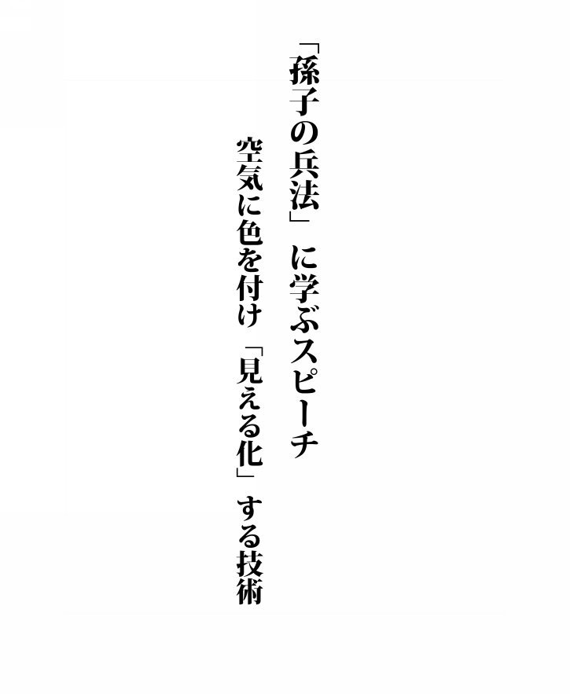
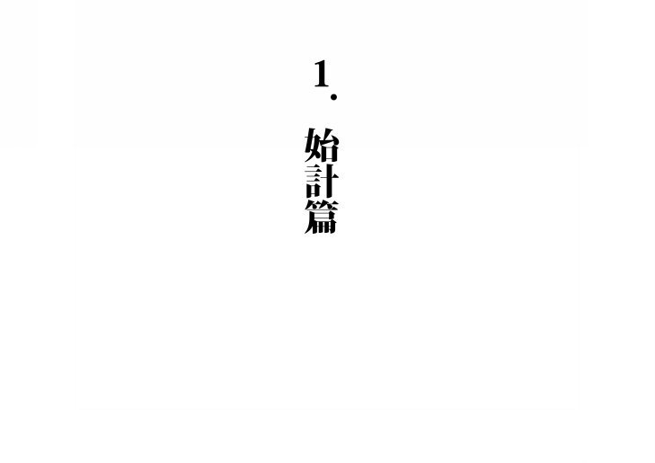
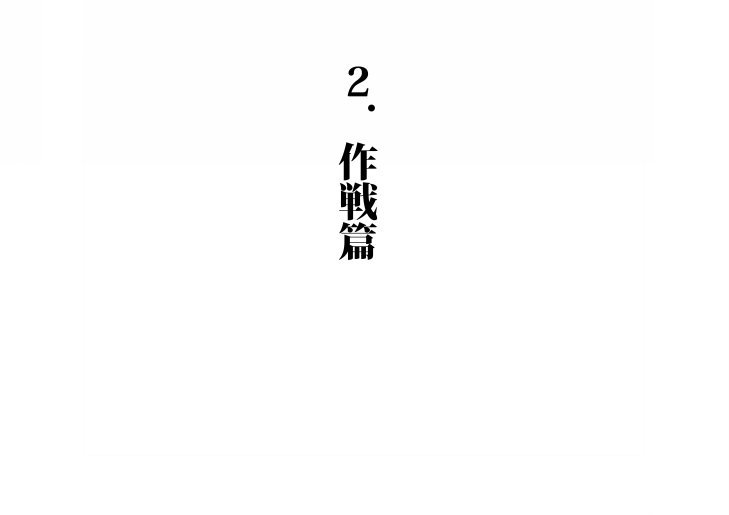
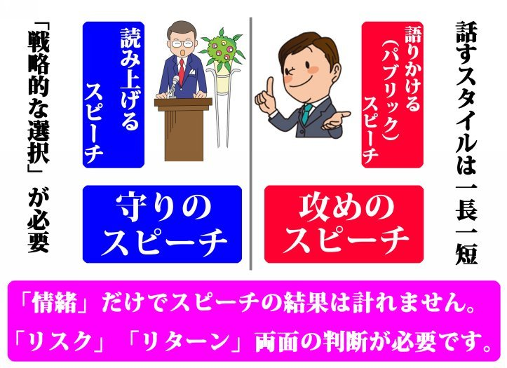
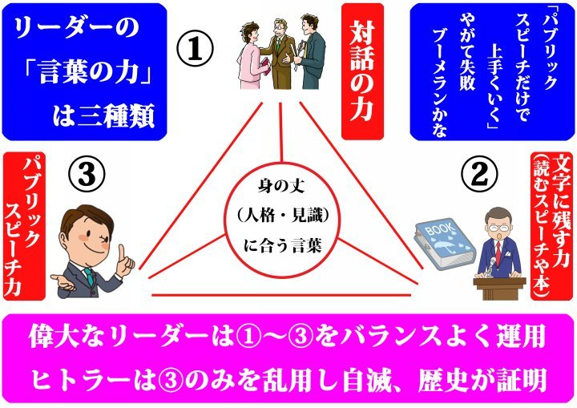
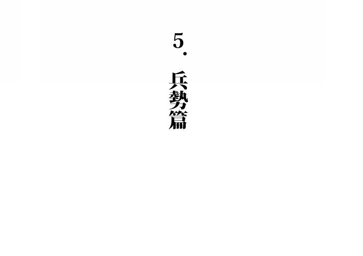
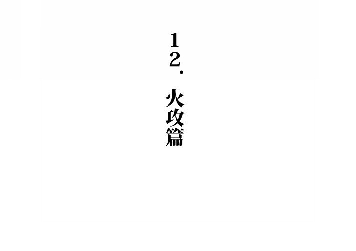
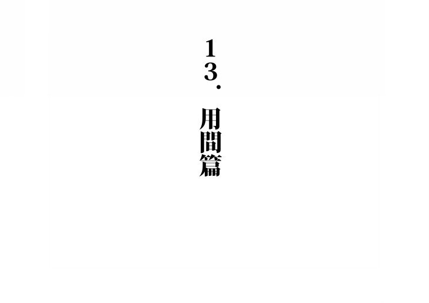
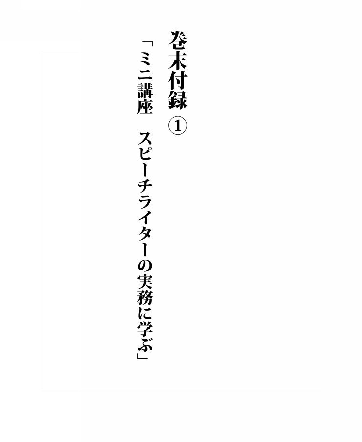
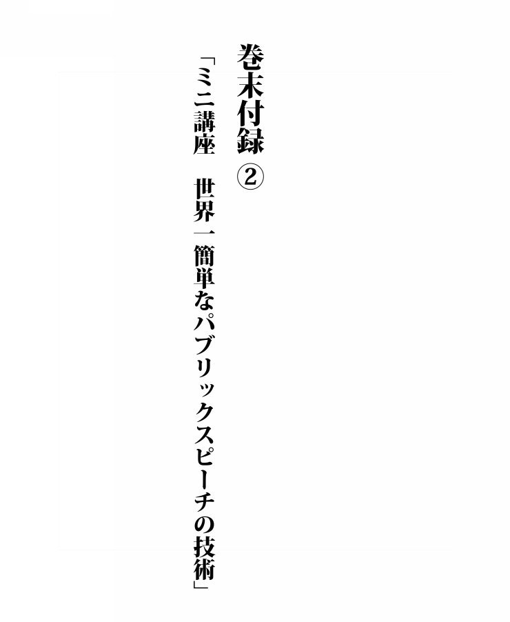

| 「孫子の兵法」に学ぶスピーチ: 空気に色を付け「見える化」する技術 | |
| 近藤圭太 | |
| (2017) | |

はじめに
中国の古典である兵法書「 孫子」ですが、数千年という時の流れを経ても、いまだに読み継がれ「 生きたノウハウ」として活用されています。この事実は「 人間の本質は基本的には変わらない」ということを如実に示しているといえるでしょう。
筆者は、「 スピーチの原稿を考える」という「 戦術のプロ」として生計を立てている人間ですが、試みに「 スピーチを成功させるという目的で解釈すればどうなるか」という観点で「 孫子」を意訳してみたところ、面白いほどツボにはまり応用性が高いことを発見しました。
「 孫子」１３篇をスピーチを行う人の立場で一行に凝縮すれば、次の言葉になるのではないでしょうか。
「 リスクを最低限に抑え、身の丈（ 人格・見識）に合う形でリターンを最大化させる」
スピーチだけではなく、広い意味での「 言葉の運用」を行う上で、「 リスクとリターンの両面から考える」ということはきわめて重要です。
失言で失脚する国務大臣や、派手な物言いで一時は人気を集めたものの、逆にブーメランが返ってきて党の代表を辞任せざるを得なかった政治家などの姿を見ていると、「 リターン」のみを追い求め、「 リスク」を考えない人間の愚かさが浮かび上がってまいります。
反対に、選挙で大敗した直後に党の立て直しを図り、「 派手なパフォーマンスを行いましょう」という進言をしりぞけ、全国各地を回りながら車座の対話を行い、再建の道筋をつけた国政政党のトップからも、逆に多くのことが学び取れます。
スピーチの成否、さらにいえば広い意味での「 言葉の運用」に最も大きく影響するのは、「 身の丈（ 人格・見識）」の高さです。
その上で、「 内容（ 全体の構成・効果的な言葉の使い方）」「 話し方の練習」という戦術を正しく運用すれば、
「 リスクを最低限に抑え、身の丈（ 人格・見識）に合う形でリターンを最大化させる」
という、「 孫子」に書かれている目的を達成することができるでしょう。
さあこれから、具体的な内容について見てまいりましょう。
目次
はじめに
１．始計篇
２．作戦篇
３．謀攻篇
４．軍形篇
５．兵勢篇
６．虚実篇
７．軍争篇
８．九変篇
９．行軍篇
１０．地形篇
１１．九地篇
１２．火攻篇
１３．用間篇
おわりに
巻末付録①「 ミニ講座 スピーチライターの実務に学ぶ」
巻末付録②「 ミニ講座 世界一簡単なパブリックスピーチの技術」

スピーチやプレゼンテーションは、あらゆる人間関係において、主導権を握ったり、リスクを回避するために極めて重要である。深い理解と実践方法の習得が不可欠である。
【 解説】
孫子の兵法が書かれた頃は、「 武器による戦い」の時代でした。
選挙による多数決や、プレゼンテーションの良し悪しにより、商品の売り上げが大きく左右される現代とは状況は違いますが、「 人間そのものに対する理解」が勝敗を決するという意味では、「 全く本質は変わっていない」といえるでしょう。
人間に対する「 浅い理解」と「 表面的なテクニックの模倣」では、勝利はおぼつかない。このことを、まずは念頭に置きながら読み進めてまいりましょう。
そのためには、まず５つの要点を押さえた上で自らの能力を把握し、７つの比較軸を持って、ライバルとの関係性を判断する。
５つの要点とは「 主題」「 時」「 会場」「 人格」「 内容と話し方」である。
「 主題」とは、聴衆と話す人との連帯感を生じさせるものである。これがあれば、聴衆は話を聞いた時に感動するだけではなく、その後の生き方にも影響をおよぼしていく。
「 時」とは、流行、事件、イベント、季節、などの条件をいう。
「 会場」とは、聴衆の種類、式典の内容、聴衆の人数、演台の有無、紙やスピーチプロンプターなどの有無などの条件をいう。
「 人格」とは、見識、幅広い知識、人間に対する洞察力、言動の一貫性、決断力、勇気など、話をする人の人間性の問題である。
「 内容と話し方」とは、全体の構成、「 読み上げるスピーチ」を行う場合の原稿、「 （ 語り掛ける）パブリックスピーチ」を行う場合の台本など具体的な方法のことである。
この５つの要点は、リーダー的な立場にいる人は、温度差こそあれ心得ているものである。しかしこれを本当の意味で理解し、武器として使いこなす者だけが、勝利を掴むことができる。反対にそれぞれの理解度が浅かったり、関連性が理解できていないのであれば、勝利を収めることはできない。
さらに、次の７つの比較軸に照らして、同じ立場や目的で、ライバルに勝ち、より多くの人の支持を得るために、方針を決定する。
一、ライバルに比べて、リーダーとして結果を残しているのか。
二、ライバルに比べて、優秀なパートナーがいるのか。
三、ライバルに比べて、天の時と地の利を得ているのか。
四、ライバルに比べて、実績を上げるためのノウハウを確立し、かつ実行できているのか。
五、ライバルに比べて、自分のしていることが魅力的であるのか、発信力に優っているのか。
六、ライバルに比べて、自分自身や協力してくれる人の実務能力は高いのか。
七、ライバルに比べて、勝負感を持って物事に取り組み、自らに高いハードルを課しているのか。
この７つの比較軸を比較検討した上で、スピーチの成否の見通しをつけなければならない。
【 解説】
例えばサッカーやボクシングに勝利するためには、「 攻撃」と「 防御」の両方を考えなければならない。当然のことではないでしょうか。さらにいえば「 攻撃」の中でも、「 派手な大技」を「 前後関係」を無視して繰り出したとしても、上手くいくはずがないのは容易に想像がつくと思います。
マラドーナのような「 神の手ゴール」だけを狙っているサッカー選手や、『 あしたのジョー』に出てくる必殺技、「 クロスカウンター」のみが頭にこびりついているボクサーは、退場の憂き目にあったり、１ラウンドでボコボコにされてＫＯされるのは自然の流れであるといえるでしょう。
「 言葉の戦い」であるスピーチにおいても、同じことがいえます。
さらにいえば、「 スピーチで人を感動させたい」と目をキラキラさせている、お花畑的な価値観から自らを解放し、上手に言葉を「 運用」するためには、お医者さんのようにいろんな事柄を細かく分けた上で、一つ一つ丁寧に見ていく必要があります。
５つの要点と７つの比較軸で自分と周りの状況を「 立体的」に見ることは、「 神の手ゴール」や「 クロスカウンター」のような「 いいとこ取り」を狙う「 平面的」な物の見方とは対極にある考え方だといえます。
例えば、以下の事例について見てまいりましょう。
●２０１７年４月２５日、今村震災復興大臣が所属する派閥のパーティーで「 まだ東北で、あっちの方でよかった。首都圏あたりだと莫大、甚大（ な被害）だったと思う（ 出典 日本経済新聞）」という発言を行う。結果、実質的に罷免されることに。
●この挨拶は、派閥の領袖である自民党の二階幹事長が「 度重なる失言により、失墜した信頼を回復するための舞台」として用意したとのことである。
●もし仮に今村大臣が自分自身の、つい場の雰囲気にほだされて、余計なことをいってしまう資質（ ５つの要点の【 人格】）やマスコミから「 札付きの放言大臣」とレッテルを貼られている状況（ ７つの比較軸の【 天の時と地の利】）を正しく認識していれば、スピーチライターや秘書などに話す内容を事前にチェックしてもらった上で、「 守りのスピーチ（ 書いた物などを読み上げる／準備した以外のことは言わない）」を戦略的に運用することもできたはず。
スピーチを行う人が、先に述べた５つの要点と７つの比較軸を用いるならば、必ずスピーチに成功するであろう。反対に用いないのであれば、スピーチに失敗することになるであろう。５つの要点と７つの比較軸という原則を理解した後は、聴衆の状況に基づいて効果的なフレーズを使うことが求められる。
スピーチとは「 新鮮な切り口の言葉」の異名である。
そのためにあえて美辞麗句ではなく、地に足のついた言葉を用い、オーバーアクションな言葉を用いるのではなく、一歩引いた表現も駆使し、手垢にまみれた常套句を避けながら、ウイットというスパイスを効かせたフレーズを用い、聴衆が過度に情緒的な言葉を求めているときは肩透かしを食らわせ、漫然と話を聞いている人々には、キレのあるフレーズを用いて目を覚まさせ、鵜の目鷹の目でこちらの揚げ足取りを伺っている聞き手には、ガードを固めて失言のリスクをつぶし、こちらの批判が逆にブーメランとして返ってくるリスクがある時には、あえて言及を避け、ライバルが感情的になっている時には、挑発して火に油を注ぎ、逆に謙虚な姿勢を示しているときには、巧みにお世辞を使って慢心させ、安心している時には痛いところを突いて疲労感を煽り、ライバル同士が団結している時には、言葉の石つぶてを投げて、分裂させる。
スピーチによって、「 共感を得る」ことが目的の場合もあれば、「 ライバルを攻める」ことが必要な場合もあるだろうが、いずれにあっても、シンプルな中に意外性と新鮮な印象を与える言葉により、人の心の隙間をつくことが必要になる。これがスピーチライターのいうところの効果的なフレーズであって、取材を行う前には伝えることのできないものである。
スピーチを行う前に成功する見通しがつくのは、５つの要点と７つの比較軸に基づいて考えた結果、勝ち目が多いということである。逆に失敗する予測が成り立つのは、５つの要点と７つの比較軸に基づいて、成功する可能性が少ないからである。
条件の違いにより、スピーチの成否が決まるというのは当然のことである。
【 解説】
タモリさんは「 スピーチの達人」といえる人ですが、オーバーアクションな物言いをしたり、自分の言葉に酔うといったことがありません。この姿勢はギネスブックにも登録（ 同一司会者による、生放送バラエティ最多放送記録）された番組、「 笑っていいとも！」の最終回においても貫かれていました。
お昼のレギュラー番組のラストにおいても、その晩放映されたグランドフィナーレにおいても、最後の掛け声は「 また明日も見てくれるかな？（ タモリさん）」「 いいとも！（ 客席）」でした。
お昼の終了間際、出演者の一人がタモリさんに「 最後にどんなことをいうのか、日本中が注目していますよ（ 趣意）」と水を向けました。
結果は、奇をてらうことなくいい意味での予定調和なフレーズである、「 また明日も見てくれるかな？」のフレーズで締めたタモリさんでしたが、もし仮に「 万感の思いを込めたメッセージ」を叫んだり、ビートたけしさんのような「 毒舌」で結んだとすれば、ひょっとすれば奇異な印象が残ったかもしれません。
「 身の丈（ 人格・見識）に合う表現」をさりげなく使いこなすタモリさんは、「 言葉の運用のプロ」として一流といえるでしょう。
本節の意訳の中に、「 聴衆が過度に情緒的な言葉を求めているときは肩透かしを食らわせ」とありましたが、タモリさんは天性の感覚と経験、そしておそらく見えない努力によって、場の空気を見極めているのではないかと思います。
しかし、タモリさんに比べれば人前で話す機会が少ない私たちが、「 リスクを最低限に抑え、身の丈（ 人格・見識）に合う形でリターンを最大化させる」ことを目的にしたフレーズを使いこなすことは簡単ではありません。
やはり場の空気に色を付け「 見える化」するためには、前節の解説でも書いたように、「 状況を細かく分けて分析し、調べ上げる」という「 事前の準備」が欠かせません。その上で「 どうしてもインパクトのあるフレーズを使いたい」という時には、「 複数のフレーズ」を用意しておき、その場で決断するという判断もあり得ると思います。

スピーチも内容や種類によっては、準備に時間がかかり、経費も多くかかる場合がある。人前で話をする人の多くは、経営者や組織のリーダーであり、複数の人をマネージメントしなければならない。したがって、経営者自身の人件費も決して馬鹿にならず、スピーチの準備に必要以上の時間をかけることは、避けなければならないであろう。
仕事の優先順位を取り違え、貴重な時間と経費を浪費してしまえば、部下や仲間の士気が下がり、ライバルに隙を与えることになる。そのような状況になってしまえば、優秀な側近がいたとしても、対応するのが難しくなるだろう。
完璧主義に陥って、グズグズ準備をしたスピーチが成功することはない。
例え完璧でなくても、とりあえず仕上げてみて問題点をリサーチし、修正するサイクルを早くしたほうが、はるかにうまくいくであろう。
掛けるコストと時間というリスクと、スピーチを成功させることによって得られるリターンをはかりにかけて考えることのできないリーダーが、成功を掴み取ることはできないのではないか。
スピーチの準備を行うことの上手な人は、「 自分が伝えたいこと」は明確に持っていても、何もかも自分で考えようなどとは思わず、文章の表現力に長けた人の力をうまく使っている。
それは、鳥が上空から下界の様子を眺めるような形で善し悪しを判断し、最終的には自分の見識に基づいて原稿の採用を決断するということである。したがって、「 考える時間がない」ということにはならないわけである。
リーダーがスピーチの内容を考えるのに行き詰まってしまうのは、自分ですべて考えなければならないと思い込んでいるからであり、貴重な時間を決断以外の時間に割いてしまえば、周りにも良くない影響を与えてしまう。
すぐれたリーダーは、最良の決断をするために時間を確保することが、結果的にライバルの力を奪うことをよく知っている。１時間自らの時間を確保することは、部下にとって２０時間を確保することに相当し、一枚のすぐれた原稿を仕上げることは、２０枚のお札に相当するのである。
そこで、完成度の高いスピーチ原稿を仕上げることは、リーダーの仕事を勢いづかせることになるのだが、時間を確保することは利益に直結することになる。したがって、すぐれた文章を書く人間に対しては、その働きを十分に評価し、報酬を与えた上で、さらに自らの考えを深いレベルまで理解してもらい重用する。これがライバルに勝って、より強くなるということである。
したがって、スピーチを成功させることは第一であるが、準備にグズグズ時間をかけるのは良くない。スピーチの成否をわきまえたリーダーは、多くの人の人生に影響をおよぼし、組織の盛衰を決する存在である。
【 解説】
「 １．始計篇」の中（ ５つの要点「 内容と話し方」）でも触れられていましたが、スピーチの種類は大きくいえば二つになります。
一つは書いた物などを「 読み上げるスピーチ」、もう一つは何も見ずに「 （ 語り掛ける）パブリックスピーチ」です。
この二つは一長一短があり、「 どちらが上で、どちらが下」というものではありません。「 リスク（ 信用の失墜や言質を取られる可能性／時間や金銭面のコストなど）の大きさ」と「 リターン（ 売り上げや投票数など数値に表れやすいもの／イメージの向上など数値化が難しいもの）の伸びしろ」をはかりにかけて考え、「 適切に選択」するのが正しい運用だといえるでしょう。

さて、スピーチを行うにあたっては、今述べたように「 話すスタイルを選択する」と同時に「 準備に人の力を借りるか、自分ですべて行うのか」という判断も必要になります。本編でも書かれているように、「 時間を失う」というリスクを回避するためには、場合によっては「 スピーチの専門家」の力を活用するのも方法の一つです。
スピーチのプロは、「 （ 語り掛ける）パブリックスピーチ」の方法論を教える「 スピーチトレーナー」と原稿の内容を考える、「 スピーチライター」の二種類に大別されます。
「 スピーチトレーナー」の先生の中には、立派な見識を持っておられる方もいますが、「 インパクトのある話し方を行う」という「 戦術論」にこだわり、本編で述べられている「 リスクとリターンの両面から考える」という「 戦略論」を理解されていない方もおられます。
そして、「 スピーチライター」ですが、「 あくまでも自分の見識を『 見える化』するために活用する」そして、「 原稿の採用は自らの責任において決断する」という意識がなければ、「 身の丈（ 人格・見識）」とかみ合わない内容になる可能性もあります。
例えば、以下のような失敗をする可能性もあるのではないでしょうか。
●場の空気にそぐわない、オーバーアクションな物言いをしてしまい、奇異な印象を与えてしまう。
※演劇系のスピーチトレーナーにレッスンを受けるも、自分の立場や状況を上手く伝えきれず、いわれるがままにひたすら練習に没頭。
●講演会において、いわゆる「 立派なスピーチ」「 ためになる話」を行うも、その後の聴衆とのディスカッションにおいて、「 かみ合わないやり取り」を行ってしまい、怪訝な顔をされてしまう。
※スピーチライターに原稿を考えてもらったが、取材をしてもらっているときも説明するのを面倒くさがり、原稿のチェックもおざなり、「 丸投げ」状態で本番に臨む。
少し硬い言い回しになりますが、「 社会的分業」という言葉があります。
無人島に取り残された人が、何もかも自給自足で生活するのとは違い、「 食べ物はスーパーマーケット」そして、「 ハロウィンの仮装グッズはネットショップ」といった具合に、「 その道のプロ」に力を借りることで、私たちは貴重な時間を大切に使うことができます。スピーチの分野においても、人類発展の原動力とも言うべき、「 社会的分業」の原則を応用することは有効です。ただし、運用を間違えれば上手くいきません。
先に書いた、スピーチのプロに力を借りながらも上手くいかなかった人は、例えば糖尿病を患っているのに、スーパーで安売りしている脂身の多い豚の角煮を過食したり、コスプレ衣装のサイズをろくに見ずに、スマホの購入ボタンを押してしまう人と同じではないでしょうか。
さらに糖尿病を悪化させてしまったり、無理やりに衣装を着たもののピチピチで身動きが取れず、ハロウィンパーティーの片隅でうずくまっている人とは違い、カロリー計算をした食事を取りながら適度な運動を行ったり、パーティーの会場で友達を楽しませる人の方が、「 身の丈（ 人格・見識）」の高い人であるといえるでしょう。
本編の内容を繰り返して読んでいただければ、リーダーとしての自己教育を行うことが、結果的にスピーチを成功させることにつながることが理解できると思います。
すなわち、
１．スピード感のある対応
２．全体への目配り
３．決断力
これらを兼ね備えた人の持つ求心力は、スピーチライターなどの「 一芸に秀でる」人たちの力をさらに引き出し、「 足し算」ではなく「 掛け算」の力となって、「 リスクを最低限に抑え、身の丈（ 人格・見識）に合う形でリターンを最大化させる」スピーチの結果につながることでしょう。
およそスピーチの原則としては、世界を変えるというよりも、一人一人と対話するという思いで語り掛けるのが上策で、オーバーアクションな物言いでカリスマ的な存在感を示すのはそれに劣る。
国を変えるというよりも、一人一人と対話するという思いで語り掛けるのが上策で、オーバーアクションな物言いでカリスマ的な存在感を示すのはそれに劣る。
一つの地方や同じ業種の人たち、同じ団体に属している人を変えるというよりも、一人一人と対話するという思いで語り掛けるのが上策で、オーバーアクションな物言いでカリスマ的な存在感を示すのはそれに劣る。
一つの町や限られたコミュニティに属している人を変えるというよりも、一人一人と対話するという思いで語り掛けるのが上策で、オーバーアクションな物言いでカリスマ的な存在感を示すのはそれに劣る。
一方的な話で、「 目の前の一人」を変えてやろうと意気込むよりも、まずはよく話を聞き、信頼関係のパイプを広げてから、誠意をもって語りかけるのが上策で、オーバーアクションな物言いでカリスマ的な存在感を示すのはそれに劣る。
ゆえにスピーチを１００回行って、そのすべてが「 劇場型」の派手な話であることは素晴らしいことではない。失言と受け取られるリスクを最低限に抑え、その話をすることによって得られるリターンを、身の丈に合った形で一番高いところに持っていくのが、素晴らしいスピーチといえる。
すなわち、素晴らしいスピーチはリスク回避を第一に置いた話であり、その次は聴衆が自分に対しては共感、ライバルやライバルになりうる人に疑問を持つような話をすることであり、その次は「 あの人のことを言ってるんだな」と名前が浮かぶような話をすることであり、一番まずいのは名指しで人を非難することである。
特定の人を非難するのは、他に方法がない場合にやむを得ずを行うものである。その場合もしっかりと理論武装した上で、起こりうる状況を予測し、どのような形で幕引きをするのかを準備した上で行わなければならない。
その場の感情にまかせて、やみくもに人を非難することは、信頼を大いに失墜させ、しかもライバルは痛くも痒くもないということになる。これが、安易に人を非難することの害である。
それゆえ、スピーチの上手な人はライバルより有利な立場に立ったとしても、あてつけや名指しや、ライバルの背後にいる人たちと大立ち回りをしたり、論争を長引かせたりはしない。必ず誰の名誉も失わない形で世間の信頼を得るのであり、そのため自分自身や仲間が疲弊しない形で、完全な利益が得られるのである。これがスピーチで自らの立場を有利な方向に持っていく原則である。
そこでスピーチの原則としては、自分がライバルやライバルになりうる人よりも１０倍有利と判断するのであれば、自分のフィールドで聴衆の興味を引く話を行い、５倍有利であれば、直接もしくは間接的なアプローチでウィークポイントを指摘する方向の話を行い、倍有利であれば、疑問を生じさせるような話を行い、同じであればよりきめの細かいアプローチで聴衆の関心を引くような話を行い、少なければライバルとぶつからないような題材の話を行い、勝ち目がないと判断するのであれば、スピーチ自体を行わない。カラ元気やハッタリだけのスピーチで、自らの立場を有利に持っていくのは無理である。
【 解説】
２０１８年６月現在の内閣総理大臣 安倍晋三氏は、スピーチの成否を考える上で実に興味深い人です。「 スピーチの天才」や「 雄弁家」という文脈では語られない人ですが、「 （ 書いた物を） 読み上げるスピーチ」と「 （ 語りかける）パブリックスピーチ」の両方をうまく運用し、長期政権を維持しながら（ 賛否両論はあるにしても）、経済を回復軌道に乗せたことは一定の評価に値するのではないでしょうか。
半面安倍総理は、スピーチにおける失敗もいくつか経験しています。
まずここで２０１７年に行われた、都議会議員選挙の後半、話題となった演説を通して考察して参りたいと思います。
「 あんな人たちに負けるわけにはいかない」
このフレーズをご存知の方も多いでしょう。２０１７年７月１日、秋葉原において行われた自民党の街頭演説において、妨害行為を行っていた一部の人に対して安倍総理が
放った言葉ですが、テレビで繰り返し引用され自民党大敗の原因の一つになりました。
本編の中にもありましたが、スピーチにおいて「 名指しで人を非難する」ことは、孫子の兵法の原文における、「 城攻め」に例えられる方法といえるでしょう。
「 ソノ下ハ城ヲ攻ム。城ヲ責ムルノ法ハ、己ムヲ得ザルガタメナリ」
「 そして最低の策は、城攻めに訴えることである。城攻めというのは、やむなく用いる最後の手段にすぎない」
三笠書房『 孫子の兵法 ●ライバルに勝つ知恵と戦略』P52. P51.
「 名指しで人を非難する」というのは、「 その人」だけではなく、「 その背後にいる人」との「 消耗戦」を行うということです。
秋葉原の一角でプラカードを掲げて騒ぎ立てていた人たちはごく一部でしたが、「 隙あらば、安倍総理のイメージを貶めてやろう」と手ぐすねを引いて待ち構えていた一部のマスコミに乗ぜられる形で、編集のトリックを用いた「 効果的な絵（ ごく少数の反対派がたくさんいるかのような）」を取られてしまい、繰り返しテレビで放映されたのは失敗でした。それはあたかも、大坂冬の陣における「 真田丸の戦い」において、幸村の挑発に乗ぜられた徳川軍が攻めかかり、ことごとく討ち死にした結果にも相通ずるかもしれません。
この事例は「 （ 語り掛ける）パブリックスピーチ」における、アドリブの失敗ですが、反対に「 （ 書いた物などを）読み上げるスピーチ」の成功事例も紹介します。
２０１５年の８月に発表された、「 戦後７０年談話」は、どのようなことが語られるのか、国の内外から「 鵜の目鷹の目」で注目されていました。
盛り込んだ（ もしくは使わなかった）言葉の一つが、まかり間違えば外交問題の火種となり、国内の支持者から失望をもって受け止められ、連立している政党との関係にも陰を落とすことにもなるかもしれない状況があったわけです。
しかし、発表された後は、「 意外に良かった（ 田原総一朗氏）」という論調に代表されるように冷静な反応が多数を占めており、外交上の大きな問題に発展することもありませんでした。
「 戦後７０年談話」はテキスト化された記録として、諸外国語に翻訳され、繰り返し引用され続ける種類のスピーチです。しかし、仮に安倍総理が「 戦後７０年談話」を「 政治家としての一世一代の晴れ舞台にしたい」という思い込みにとりつかれ、「 （ 語り掛ける）パブリックスピーチ」で行ったとしたらどうでしょうか。「 話す内容」と「 テキストとして残る内容」に微妙な「 ズレ」が生じ、様々な悪い影響が起こり得たのではないでしょうか。
実際には、過去の総理が行った「 戦後●●年談話」が「 （ 書いた物などを）読み上げるスピーチ」で行われた経緯から考えても、前例を覆して「 （ 語り掛ける）パブリックスピーチ」を行う選択肢はなかったと思います。
しかし、この事例からは 次のことが学び取れるのではないでしょうか。
すなわち。
総じてリスクを回避する方が優先度の強い「 守りのスピーチ」の場合は、「 （ 書いた物などを）読み上げるスピーチ」を行う方が、上手くいく可能性が高い。
スピーチライターはリーダーの参謀役である。
参謀役がリーダーと緊密であれば、リーダー自身や率いる組織は必ず強くなるであろう。しかし双方の信頼関係が薄く、秘書などを通じた間接的なやりとりしかできないのであれば、リーダーの見識や経験に基づいたスピーチ原稿の作成が難しくなり、聴く人に違和感を与える内容の話になる。ひいては苦しい立場に追い込まれてしまうであろう。
そこでリーダーが、スピーチについて心配しなければならないことが３つある。第１には、十分に原稿のチェックをしないまま安易に完成の判断を下したり、反対に完成している原稿に「 これも入れたい。あれも入れたい」と思いつきで追加の指示を出すことである。このような対応を「 決断力のなさ」というのである。
第２には、効果的な文章の組み立ての知識がないのに、ちゃぶ台をひっくり返すような指示を出すことである。
第３には断片的なフレーズや美しい言い回しに酔ってしまい、全体のバランスを考えて提案する、スピーチライターの意見を無視することである。
スピーチ原稿の良し悪しは、トータルで見なければならず、リーダーの思い込みや優柔不断な対応は、ライバルに隙を見せることに繋がる。このようなことを「 自滅する」というのである。
ゆえに、スピーチを成功させるために必要な事柄がある。
第１には、踏み込んだ話をするときと、失言を回避するために地雷をすり抜ける話をする時がわかっているリーダーは成功する。
第２にはスケールの大きい話と、きめの細かい話の効果的な使い方がわかっているリーダーは成功する。
第３にはスピーチライター、スタッフや仲間と団結しているリーダーが成功する。
第４には「 自分は大丈夫だ」と油断して悠長に構えている相手をターゲットにした話をするリーダーは成功する。
第５にはスピーチライターが優秀で、リーダーがそれに干渉しなければ成功する。
だから、ライバルやライバルになりうる人の事情と、自らの状況を理解している人は、１００回スピーチを行っても危険はなく、相手のことを知らず、自分のことしか知らない人は成功したり失敗したりし、相手のことも自分のことも分かっていない人は、スピーチをするごとに失敗する」ということになる。
【 解説】
本編の後半部分は、専門の職種である「 スピーチライター」の力を活用するにあたっての注意点について述べています。
「 人に原稿を考えてもらうのは後ろめたい」という人もいるかもしれませんが、「 自分で原稿を考える」のも、「 書いてもらった内容を選び採用を決断する」するのも「 自分の見識を見える化する」ための手段であることに違いはありません。
過去の名高い指導者の多くは、スピーチライター的な役割を果たす人を自分の参謀として上手に使い、「 自らの言葉」としての説得力を持つメッセージを数多く生み出してきました。
昭和天皇が太平洋戦争の終結にあたって、国民に語りかけた言葉、いわゆる「 玉音放送」は官僚が草案を起草し、内閣の人たちが様々な議論を経て修正案をまとめあげ、最後には昭和天皇ご自身も手を加えられて完成させています。
日露戦争の勝利を決定づけた日本海海戦において、空前絶後のパーフェクトゲームを収めたリーダーである東郷平八郎も秋山真之という参謀をうまく使い、「 本日天気晴朗ナレドモ波高シ」と言うフレーズや、その内容が国内外で高く評価された「 連合艦隊解散の辞」などといった「 自らの哲学や見識を象徴する言葉」を生み出すことに成功しています。
さらにかつての内閣総理大臣池田隼人は、暴漢に襲われて命を落とした日本社会党の浅沼稲次郎委員長の追悼演説を国会で行いました。この演説はライバルである社会党の議員たちも涙を浮かべたと言われる名文ですが、内容は秘書官が考えています。
これらの事例から読み取れることはすなわち、スピーチ（ や広い意味での言葉の運用）の成否に一番大きく影響するのは、自分自身の「 身の丈（ 人格・見識）」の高さだということです。
その上で、「 自分の見識を見える化する」ためにスピーチライターなどの専門家の力を上手く活用することで、言葉はより説得力を持ち、やがては時代を超えて人々に影響を及ぼし続けることも可能になるでしょう。
過去にスピーチを成功させた人の多くは、まずリスクを想定した上で失言する可能性を減らし、効果的なフレーズで聴衆の心を掴むことに思いを巡らせた。このことで明らかなように、失敗を回避できるかどうかはこちら側の問題であるが、ライバルに勝利し、聴衆の心をわしづかみにできるかどうかは、外的な要因がどうであるかにかかっている。
したがって、どんなにスピーチが上手な人でも、問題発言や自己矛盾や場の空気の読み違いを回避することはできるが、百発百中で聴衆の心を掴み、行動を起こさせることはできない。
すなわち、「 成功の可能性を高めることはできるが、必ず成功するとは限らない」ということである。
したがって、スピーチの上手な人は「 守るスタンス」で話をするときは、手のうちを明かさずライバルにつけいる隙を与えず、「 攻め時」と見れば効果的なフレーズを連呼する形で攻め立て、ライバルに反論の機会を与えない。かくてイメージダウンという失敗を犯すことなく、自らの立場を有利にすることができるのである。
やたらとオーバーアクションな物言いで、世間の注目を集めるようなスピーチは最善なスピーチではない。また、表面的な情緒に絡め取られ、聞いた人を思考停止に陥らせるような話も最善のスピーチとはいえない。
例えば、聞いた人が「 なるほど」というフレーズを一つ発したとしても、誰も文豪とはいわない。一般的に使われていない専門的な用語を使ったとしても、誰も「 天才ですね」とはいわない。変わったエピソードを紹介したとしても、誰も「 世界一の物知りですね」とはいわない。今いったことは普通の人であっても、インターネットで少し検索すれば、題材はいくらでも見つけられるからである。
それと同じように、過去にスピーチを成功させた人は、自分の見識や行動の身の丈に合った形で無理のない話をしている。だから、仕事の成果に比べてスピーチそのものは目立たないことが多く、その雄弁さがもてはやされる事は少ない。
したがって、スピーチを成功させるとは、繰り返し述べているように、失言のリスクを最低限に抑え、身の丈に合った形でリターンを最大化させるということであり、このことを理解している人は万に一つも失敗することがない。なぜなら、既に負けているライバルやライバルになりうる人を敵にして戦っているからである。つまり、スピーチが上手な人は「 負けない体制」を築き、ライバルの隙はのがさずとらえるのである。
今いったように、普段から自らの見識や決断力を磨く努力をし、成功する体制を整えてからスピーチを行う者が勝利を納める。
逆に本番の直前になってから慌てて「 世界を変える」「 聴く人を感動させる」「 ジョブズのプレゼンによれば」などといって、いいとこ取りをもくろむ人は、「 自己満足」「 ただのパフォーマンス」「 あの人はいっていることと、やっていることが違う」などと批判された、過去の政治家と同じ運命を辿ることになる。
それゆえに、スピーチを単なるパフォーマンスではなく、長期的な視点で「 成功」を勝ち取るための重要な手段の一つと考えるリーダーは、まず自らや関係する人たちの仕事のあり方を見直し、成功体験や貴重な失敗の体験を、再現可能なノウハウとして確立した上で実行し、勝利する体制を築いていくのである。
スピーチの成否は、次の要素によって決まる。
一．伝えようとしている課題が、どれだけ幅広い人から支持される潜在力を持っているのか
二．自分自身がどれだけ、幅広い知識と見識の深さを持っているのか
三．自分の支持者が現時点でどれだけいるのか
四．自分自身の人前で話す能力がどれだけあるのか
五．前段の四つに照らして、スピーチを成功させる見通しが立つのか
ライバルやライバルになりうる人に比べて、こちらの戦力が５００倍以上も優っていて初めて必ず勝つといえる。反対に戦力が逆の場合には、必ず敗れる。
スピーチを成功させて勝利を収めるものは、満々とたたえた水を谷底に切って落とすように、一気にライバルを圧倒する。スピーチを成功させる体制を組むとは、このことをいうのである。
【 解説】
リーダーが用いるべき言葉の力は、大別すると「 ①対話力」「 ②文字に残す力（ 読むスピーチや本、ＳＮＳによる発信など）」そして「 ③（ 語り掛ける）パブリックスピーチ力」の３種類です。それらの力の源泉となるのは、「 身の丈（ 人格・見識）」の高さであり、身の丈に合わない形で言葉の力を運用しても、必ず後で「 あの人はいっていることと、やっていることが違う」というブーメランとして返ってまいります。

このことを如実に表した事例が、２００９年に起こった民主党の政権交代とその後の混迷ぶり、２０１２年に再び自公政権が政権を奪還した一連の政治状況ではないでしょうか。
鳴り物入りのマニフェストで政権交代を果たした民主党政権が、ほとんど成果を上げることができず、一貫性のない外交で他国との関係悪化を招き、さらには、東日本大震災の対応が後手後手に回り、被災者に多大な苦難を与えたことは、読者の皆様もよくご記憶のことと思います。
「 政権交代」そして「 二大政党」という言葉がメディアに踊り、その尻馬に乗る形で民主党の議員たちがドヤ顔で、時には街頭、時にはテレビで得々と語る姿は、まさしく「 オーバーアクションな物言い」「 表面的な情緒」そして、「 聞いた人を思考停止に陥らせる話」の限界を示していたといえるでしょう。
そのような民主党の姿とは反対に、「 ①対話力」「 ②文字に残す力（ 読むスピーチや本、ＳＮＳによる発信など）」そして「 ③（ 語り掛ける）パブリックスピーチ力」という言葉の力を上手く運用し、政権奪還に道筋をつけたのが、当時の自民党総裁であった谷垣禎一氏と公明党代表、山口那津男氏という二人のリーダーだったといえるでしょう。ともに弁護士であり、司法修習生同期というこの二人は、お互いの立場で言葉の力を運用しながら、党の再建に取り掛かっていきました。
２００９年の総選挙で大敗した直後、自民党総裁に就任した谷垣氏は、周りから「 派手なパフォーマンスを行いましょう」と進言されたそうです。しかし、同氏は「 そうではない」とそれをしりぞけ、全国各地を回りながら「 車座の対話」に徹したそうです。
時には「 厳しい意見もあった」とのことですが、後に安倍総理が「 あの時、谷垣総裁でなければ、自民党はバラバラになっていた」と語っていたように、マネジメントや人材育成における「 対話力」の重要性を理解する上で、貴重な事例といえるでしょう。直接的なスピーチの技術論とは違いますが、「 戦いは普段から何をやるかで決まる」という孫子の兵法における基本思想に照らして、谷垣氏の姿は大いに参考になるのではないでしょうか。
トータルとしての「 言葉の力」を時にメリハリをつけながら、バランスよく運用する公明党の山口那津男代表は、「 知勇兼備の政治家」といえる人物の一人ですが、本節では同氏のアグレッシブな側面である、「 党首討論」における総理大臣への追及について解説したいと思います。
民主党政権に対する反撃開始ともいえる、鳩山由紀夫総理との党首討論（ ２０１０年３月３１日）は、冒頭から畳みかけるように、「 政治と金の問題」「 閣内ばらばらの郵政改革案」「 見通しの立たない普天間基地移設問題」「 たび重なる閣僚の国会審議遅刻」などについて厳しい指摘を行った直後、「 こんなていたらくでどうするんですか！」と一喝する形で始まります。
その後の鳩山総理は、あからさまな時間稼ぎのためにまとまりのない話を続け、ついには山口代表の判断により話の腰を折られたり、その次はわざとゆっくりした口調で話を進めるなど、無様な醜態をさらすことになります。
最後には「 かみ合わない答弁」と山口代表に総括される形で、幕切れとなった党首討論でしたが、同年６月８日に辞任した鳩山総理の限界を「 見える化」したという点では、注目すべき事例といえるでしょう。
自公両党は歴史のある政党であり、党の支持基盤は異なりますが、スピーチを成功させる基礎体力ともいえる、「 身の丈（ 人格・見識）」を高めることの重要性を、肌感覚で理解している政治家が多いといえるでしょう。
さて、「 孫子の兵法」は読むことによって得られる納得感と、現実社会での事例に整合性があるからこそ、数千年の歴史を経ても「 自分の立場に置き換えても再現可能なノウハウ」として評価され続けていると思います。
読者の皆様もまずは、本書の内容をベースに、「 実際の事例（ 身近な人の言動も含めて）」との検証を行い、信じるに値すると感じたノウハウを自らの見識を構成する要素の一つとして、ご活用いただければ幸いです。

スピーチを行うに当たって、大勢の聴衆を相手にしていても、まるで１人の相手と対話しているように納得感を持って受け止めてもらえるのは、スピーチの組み立てがうまくいっているからである。
大勢の聴衆とやりとりしても、仲の良い数人を相手するように話がはずむのは、効果的なフレーズが功を奏しているからである。
大勢の聴衆がユーモアやアドリブにうまく反応してくれ、場の雰囲気を自在にコントロールさせることができるのは、「 聞き手に応じて表現を変える」応用と、「 組み立てを考え、失言を回避する」基本との使い分けがうまくいっているからである。
ライバルを想定したスピーチを行った場合に、まるで石を卵にぶつけるように、たやすく論破することができるのは、筋の通った話で相手の弱点を突くことができるからである。
したがって、うまくアドリブを用いることができる話し手は、その変化は自然現象のように極まりがなく、長江や黄河の水のように尽きることがない。
終わっては、また繰り返して始まるというのは、春夏秋冬がそれにあたり、暗くなったと思ったら、また明るくなるというのは太陽や月がそれに当たる。
音階はドレミファソラシドの８つに過ぎないが、それらのまじりあった変化は無数である。色の現色は３つとされているが、その組み合わせは無数であり、味の種類は大きくいうと、酸っぱさ、辛さ、塩辛さ、甘さ、そして苦みの５つに過ぎないが、それらの混じりあった変化は無数である。
今いった事柄と同じように、スピーチの成り立ちは、「 基本」と「 その場の判断」の２つに過ぎないが、それらの混じりあった変化は数限りなく、極め尽くせるものではない。
過去の数多くのスピーチにおいても、「 基本」に忠実でお手本となりうるような話もあれば、「 その場の判断」から生まれた、強烈なインパクトを与える話も存在する。それはあたかも丸い輪には終わりの点が無いようなものであり、「 自分はスピーチの真髄を極めた」などとうそぶいている人は、詐欺師と呼ばれても仕方がない。
せき止められていた水が、岩をも押し流すほど激しい流れになるのが、勢いであり、ワシやタカが獲物を打ち砕くほど強烈な一撃を与えるのが、フレーズの力である。
巧みにスピーチを行う人は、勢いにのった上で強烈なフレーズを発して聴衆の心を掴む。それはあたかも、勢いよく弓を引いた後に、的の中心をめがけて矢を射るようなものである。
混乱したスピーチは、整理された話から生まれ。臆病な語り口は確信を持った話から生まれる。そして軟弱な話し方は力強い話し方から生まれる。
今いったことは、決して違う人の話をいうのではなく、動揺してしまえば１人の人が行ってしまいがちなものである。
まとまりの無い話をしてしまうのか、すっきりと頭の中に入る話ができるのかは、スピーチの組み立ての問題である。ビクビクしながら話すのか、確信を持った話ができるのかは、勢いに乗れるかどうかという問題である。弱々しい話をするのか、力強い話をすることができるのかは、今述べた組み立てと話す人の確信が総合力として力を発揮するかという問題である。
巧みに心を掴む話し手は、わかりやすい題材を示すと聴衆が話に乗ってくるし、お得感の漂う話をすると、聴衆は「 もっと聞きたい」という反応を示してくる。つまり、「 メリットがありますよ」という点を強調して誘い込み、サプライズな効果をねらって話を進めていくのである。
そこで、巧みにスピーチを行う人は勢いに乗ることを考え、自分自身のカリスマ性や天才的なスピーチライターの能力に寄りかかろうとはしない。だからうまく、自らの身の丈にあった話し方を選択したり、「 守り」と「 攻め」のバランスをよくわきまえたスピーチライターを選び出して、勢いにのったスピーチを行うことができるのである。
うまく勢いに乗るスピーチはあたかも、木や石を転がすようなものである。木や石は平らなところにおいておけば静かであるが、傾いたところでは動き出す。ただし、四角い木や石であればじっとしているであろうが、丸ければすぐに走り出すであろう。
今述べたようにノリに乗って、とどまるところを知らないスピーチの勢いは、高い山の上から丸い石を転がしたかのようである。それこそが、勢いにのったスピーチというものである。
【 解説】
本編で述べられている内容は、「 （ 語り掛ける）パブリックスピーチ」の成功イメージです。
しかし、「 （ 語り掛ける）パブリックスピーチ」を、再現性の高い技術として確立するには、かなり高度なノウハウの集約が必要です。
あえて誤解を恐れずに言えば、話し方を教えるスピーチトレーナー的な方の多くは、本書のテーマである、「 リスクを最低限に抑え、身の丈（ 人格・見識）に合う形でリターンを最大化させる」という「 戦略的な観点」ではなく、あくまでも「 どうすればインパクトの強い話し方ができるのか」という「 戦術論」を重視する傾向が強いといえるでしょう。
筆者自身も何度かお目にかかったことがありますが、サラリーマン時代に成功をおさめ、かなりの見識をお持ちの「 パブリックスピーチの専門家」の先生もいらっしゃいます。広い意味での人間形成の方が、スピーチの技術習得よりも優先度が高い、という主張を展開されている点では筆者も認識を共有しており、尊敬の念を禁じえませんが、
あくまでも「 有効な戦術の一つ」である「 （ 語り掛ける）パブリックスピーチ」が「 戦略そのもの」であるかのような主張をされています。
自戒の念を込めて言えば、原稿の代理作成を行うスピーチライターである筆者自身も含めた「 専門的なスキルを提供する」人間は得てして、「 供給者側の論理（ 売り手の都合による論理）」の主張を行う傾向にあるということです。
そのような生き方とは一線を画し「 自分の都合」が一切通用しない舞台で、「 聴いている人の反応（ 商品を注文する電話）」がリアルタイムに数値化される状況で、数万回に及ぶ話を行ってきた「 （ 語り掛ける）パブリックスピーチ」のプロがいらっしゃいます。その人はジャパネットたかたの元社長 高田明氏ですが、以下の事例は大いに参考になるのではないでしょうか。
「 スピーチの成否は、必ずしも話し方のテクニックだけでは決まらない」
２０１６年１２月１１日、このことを証明する出来事がありました。
フリーアナウンサーの古舘伊知郎氏が司会をしている番組、「 フルタチさん」において、ある企画が持ち上がりました。
「 古舘氏が、ジャパネットたかたの通販番組で商品を売る」
古館氏は筆者がいうまでもなく、鋭い言葉のセンスと巧みな話術を併せ持つ人です。
世の中にはスピーチライターのような「 言葉のプロ」や、スピーチトレーナーがそうだといえる、「 話し方のプロ」はたくさんいますが、古舘氏のように「 両方のスキルを併せ持った人」はなかなかいません。
それではその商品紹介で、どれぐらいの売り上げが出たのでしょうか。
答えを言います。
【 通常の番組比 ８０％】だったそうです。
この結果について、高田明氏が分析されています。
（ 参考 『９０秒にかけた男』日経プレミアシリーズ刊）
概要は、以下のポイントになります。
１．視聴者の意識が「 商品そのもの」よりも「 古館氏自身の存在感」に向いてしまい、ＴＶ通販の目的である「 欲しいと感じたタイミングに、電話を掛ける」という行動の足かせになってしまった。
２．トークの内容は素晴らしかった。巧みな比喩を交え、間の取り方も絶妙であった。
３．長年通販番組のＭＣをしてきた自分自身にも、他の分野である「 報道番組」などへの出演オファーがある。しかし、ほとんどお断りしている。やはり自分が話すよりも、「 その道の第一人者」が話すのが一番だと思う。
高田明氏は、本書で繰り返し述べているスピーチ成功の定義でいうところの「 身の丈（ 人格・見識）」という言葉の意味を深いところまで理解し、「 武器として使いこなしている」方だと思います。
同氏の書籍『 伝えることから始めよう（ 東洋経済新聞社）』は「 目的」から逆算して、どのように「 （ 語り掛ける）パブリックスピーチ」を「 運用」すればいいのかということについて、重要な「 気づきのヒント」を得られる名著です。是非一読されることをお勧めいたします。
さて、筆者は既に述べたように原稿の代理作成を行うスピーチライターであり、「 （ 語り掛ける）パブリックスピーチ」の専門家ではありません。しかし、「 ２．作戦篇」にあった以下の内容
「 完璧主義に陥って、グズグズ準備をしたスピーチが成功することはない。
例え完璧でなくても、とりあえず仕上げてみて問題点をリサーチし、修正するサイクルを早くしたほうが、はるかにうまくいくであろう」
に照らして、紙などを「 （ 読み上げる）スピーチ」の原稿を、「 （ 語り掛ける）パブリックスピーチ」を練習するための台本に「 変換」する方法を考案しました。詳細は巻末の付録で「 ミニ講座 世界一簡単なパブリックスピーチの技術」として紹介します。
およそスピーチを行うにあたって、早い段階で形を作り上げて聴衆の反応をリサーチしたり、ライバルの出方を伺う人は有利であるが、本番ギリギリになって準備を行う人は骨が折れる。だから巧みにスピーチを行う人は、聴衆を思いのままにすることができ、相手に振り回されることがない。
聴衆に関心を持ってもらうことが可能になるのは、利益になることを示して話をするからである。聴衆に「 自分の考え方ではだめだ」と思いを改めさせることができるのは、害があることを示して心にブレーキをかけるからである。だから、聴衆が何も考えていない時には、いい意味で疑問を生じさせることができ、満ち足りた気分でいるときは、物足りなさを生じさせることができ、静かで落ち着いた様子の時は、行動を起こすようにしむけることができるのである。
聴衆が必ず反応を示すような言葉を繰り出し、聴衆が新鮮な感動を覚えるようなフレーズを生み出し、時に長いスピーチを行ったとしても自他ともに疲れさせないというのは、想定されるライバルの思いもよらない発想で話を展開するからである。
聞く人に強いインパクトを与えるパブリック（ 語り掛ける）スピーチを行って、選挙に当選したり、テレビの商品紹介で多くの売り上げを上げるというのは、聞く人にサプライズと共感を与える話だからであり、事前に十分な準備を行い、着実に読み上げるスピーチを行って、「 失言」や「 自己陶酔」そして「 矛盾」という失敗を回避することができるのは、ライバルに隙を与えないからである。
パブリック（ 語り掛ける）スピーチを巧みに行う人には、ライバルはどうやって対抗すればいいのかわからず、着実に読み上げるスピーチを成功させる人に対しては、鵜の目鷹の目で揚げ足取りを狙っている人は、攻め所を見失うことになる。
攻めるスタンスのスピーチを行うことによって、ライバルの立場にいる人間が有効な対抗策を打ち出すことができないのは、相手の隙を突いた話を行うからである。
リスク回避のスタンスでそれまでに述べていた話題に触れなくなった人や、初めからきわどい題材に触れない相手に対して攻めようがないのは、スピードに対応できないからである。
逆にこちらの立場で考えてみよう。ライバルを議論の土俵に引きずり込み、論破したいと願うときには、相手がたとえ自分の実績や仲間を囲い込み、嵐の過ぎ去るのを待とうとしても、どうしても出るところに出ざるを得なくなる。
なぜそうなるのか、それはライバルがそのまま放置すれば、自らの立場が危うくなる問題について指摘をするからである。
さらに逆の立場で考えてみれば、こちらが議論しなくないと思うときには、仰々しく構えなくても、自分の立ち位置をはっきりさせるだけでも、ライバルはこちらと議論することができない。そうなるのはライバルが指摘したいと思う問題点をはぐらかすからである。
そこでライバルにはっきりした態勢を取らせて、こちらは手のうちを明かさず、「 どうぞ先にお話ください」というのであれば、こちらは相手の出方に応じた言葉の集中砲火を浴びせることができるが、ライバルは疑心暗鬼に陥り何も言えなくなる。
こちらは論点を絞り込むことに成功し、ライバルは失敗したとしたなら、それはあたかも１０倍の数で相手を攻め上げることにも通じるといえよう。
「 多勢に無勢」という言葉があるが、論点の絞り込みはまさしく戦争における「 兵力の集中」になぞらえることができる。
さらに言えば、ライバルがこちらの主張したいことを事前に察知できていないとすれば、たくさんの準備をしなければならず、貴重な労力を分散しなければならない。
例えば、前後左右すべての方面に精強な部隊を配置できれば、鉄壁の防御ができるだろうが、現実にはそうはいかない。いろんな論点の話を手薄な形で準備することになり、各個撃破で論破されるのが落ちである。
今述べた形になってしまうのは、ライバルを相手に備えをする立場だからである。反対に論点を絞り込み、集中砲火をあびせることができるのは、ライバルをこちらのペースに引き込み、備えさせる立場だからである。
そこで、ここ一番の場所やタイミングが分かったなら、たとえ労力を要したとしてもスピーチで雄弁を振るい、あるいはライバルに討論を挑んで論破すべきである。
勝負所や「 時」を見失ってしまえば、いくつかある論点の重要なポイントが散発的な主張にとどまってしまい、数多くの聴衆を納得させ、ライバルに止めを刺す機会を失ってしまうであろう。
ともかく、ライバルの裏をかき、主導権を奪う形でスピーチやプレゼンテーションの準備をおこなうことができれば、たとえ相手が規模の大きな会社や著名な人物であっても勝利を得ることは可能である。
そこで、スピーチやプレゼンを行う前にライバルの嘘と真実を知るためには、公開されている情報から利害や損得勘定を計算したり、電話やメールで連絡したり、ソーシャルメディア上で相手にあてつけたメッセージを発信して反応を確かめたり、踏み込んだ調査を行って弱点と強みを把握したり、あるいはアポなしでの訪問や、挑発を行って相手の対応を見極めたりして、有利なところや手薄な所とを知るのである。
そこで、スピーチやプレゼンテーションの準備を行う体制として、理想的な形といえるのは無形になることである。無形であればたとえスパイが潜り込んだとしても、意図を察知されることはなく、知恵の働く者であってもこちらの考えを洞察することができない。
ライバルの態勢に応じたスピーチやプレゼンで相手を打ち負かすやり方は、一般の人たちにはわからないであろう、その人たちは我々がとった体制がスピーチやプレゼンを成功させたことを理解したとしても、実際の運用方法までは理解できないのではないだろうか。
したがって、一度成功したスピーチやプレゼンの方法があれば、同じやり方を繰り返そうとするのが人の常であるがこれではいけない。スピーチやプレゼンのやり方は、ライバルの態勢に応じて、無限に変化するものであることを忘れてはならないであろう。
たとえて言えば、スピーチやプレゼンのありかたは、水の流れのようなものでなければならない。水は高いところから低いところに流れていくが、スピーチやプレゼンもライバルの手薄な所を突くべきであろう。
水には決まった形がないように、スピーチやプレゼンにも絶対に変わらない「 勝ちパターン」というものはあり得ない。ライバルや聴衆の状況に合わせて、変化させながら絶妙な話を行ってこそ「 成功した」といえるだろう。
それはあたかも、季節や一日の天候が常に変化しながらめぐっていくのと同じである。
【 解説】
本編も前篇と同じく、主に「 （ 語り掛ける）パブリックスピーチ」について述べています。「 策士策に溺れる」ということになってはいけませんが、「 相手の出方によって対応を変える」「 手の内を見せず、相手の手の内を探る」さらには、「 メリハリの効いた対応で相手をけむに巻く」という「 応用的なノウハウ」として、繰り返し書いてきた「 基本的なノウハウ」と併用していただければ幸いです。
さて、幕末の志士 坂本龍馬の政治上の師匠は有名な勝海舟ですが、剣術においても偉大な師匠がいます。厳密にいうと「 師匠の師匠」という位置づけの「 大師匠」である千葉周作という人物です。
周作は剣客であると同時に、ノウハウを合理的に体系化する達人であり「 言葉の運用のプロ」でもあります。彼の生き様は私たちにとっても、大いに参考になるのではないでしょうか。
周作が興した「 北辰一刀流」は従来の流派とは一線を画する指導法で知られています。例えば、それまでの剣術の奥義を記した書物は、神秘的な表現による観念的な内容を記したものがほとんどでしたが、「 北辰一刀流」は神秘性を一切排除した合理的な指導を行いました。
相撲に「 四十八手」といわれる決まり手の種類があります。
周作は当時の剣術よりも合理的な考えを持っていた相撲のいいところに学び、「 剣術六十八手」というものを編み出したそうですが、「 一つの流派を習得するには普通６年かかるが、北辰一刀流なら３年で可能である」といわれたほどだったそうです。
「 １．始計篇」において、スピーチを成功させるためには、「 お医者さんのようにいろんな事柄を細かく分けた上で、一つ一つ丁寧に見ていくことが必要」であると書きましたが、ともすれば「 神秘的（ 情緒的）」「 観念的」な文脈で語られ、「 リターンを得る（ 攻撃）」ことと「 リスクを回避する（ 防御）」ことの立て分けすらなされていない、巷間のスピーチ論の限界を見抜く上でも、周作の行った「 分析」のアプローチは参考になると思います。
本編は剣術でいうところの「 つば競り合い」について書かれているといえますが、周作自身も剣の腕前だけではなく、「 言葉の力」を上手く運用しながら、人間関係における「 つば競り合い」に勝ち抜いています。
周作が好んで使った言葉に「 舌刀（ ぜっとう）」という表現があります。
新興の流派である北辰一刀流を世間一般に認めさせるには、いわゆる「 道場破り」を行う必要があるわけですが、やみくもに他の流派を叩きのめすだけでは恨みを買い、無用の敵を作る結果につながります。
司馬遼太郎が周作を描いた小説、『 北斗の人』にも書かれていますが、周作は例えばなかなか負けを認めない剣客に対しては、「 拙者は諸州を遍歴しておりますが、御辺ほどに、心気の通った術を見たことがない」とほめそやしたり、相撲取りとトラブルになった時にはあえて「 ●●関」と敬称で呼び、相手の顔を立てるバランス感覚を見せています。
「 舌刀（ ぜっとう）」とはまさしく、「 リスクを最低限に抑え、身の丈（ 人格・見識）に合う形でリターンを最大化させる」ことを目的にして言葉を運用することの異名といえますが、千葉周作の生き方は「 孫子の兵法」を地で行く、「 戦略的なアプローチ」を感じさせます。
そのことが彼を一剣客で終わらせず、「 門弟６千人」とうたわれた北辰一刀流の興隆につながり、さらには同派の内容が現代の剣道における技術的な基礎ともなったわけですが、読者の皆様も「 言葉の力」を上手く運用しながら、可能性を大いに開いてもらえれば幸いです。
スピーチやプレゼンの段取りは、ライバルや聴衆の情報収集や分析を行いながら進めていくわけであるが、機先を制することほど難しいものはない。
つまりそれは、曲がりくねった長い道を真っすぐな近道にし、害を利益に変えるようなものであり、相手の裏をかきながら、仕上げていくことになるが、反面それは危険を伴うことでもある。
それはなぜか、陸軍の編成になぞらえてつぶさに見ていけば明らかになってくる。
火力は最も大きいが、一番足の遅い「 砲兵」は、スピーチの成否に最も大きく影響するが、短い期間ではどうすることもできない「 ①見識と人格」といえよう。
小銃やバズーカ砲や手りゅう弾などを用い、一番緻密な作戦行動をとることができる「 歩兵」は、「 ②話す内容の作成」と言えるだろう。
さらに一番足が速く、運用の仕方によっては絶大な戦果を挙げることができる「 騎兵」であるが、防御力はないに等しい。これはスピーチにおいては「 ③話し方の練習」である。
「 ①見識と実績（ 砲兵）」の薄い人が、しゃかりきになって「 ②話す内容の作成（ 歩兵）」や「 ③話し方の練習（ 騎兵）」に励むことは、いわば砲兵の援護なしで歩兵の肉弾攻撃を繰り返して貴重な戦力を消耗し、挙句の果てにはトンチンカンなタイミングで騎兵を突撃させて、全滅させる無能な司令官のようなものである。
さらに聴衆の考えがわからないのであれば、事前の段取りを行うことはできず、聞き手のニーズや個別の状況がわからないのであれば、話の方向性を決めることができず、細かい事柄に通じた相談役がいなければ、きめ細やかな対応をすることはできない。
そこで、スピーチやプレゼンテーションは、ライバルや聴衆の予想を超えた内容に仕上げることを旨として、キレのあるフレーズや全体の組み立てを巧みに行いながら、変化をつけていくものである。
【 解説】
本編でたとえ話として用いられている「 陸軍の編成」は、本書で繰り返し説明してきた考え、すなわち「 人格や見識を高めるための自己教育は、あらゆるテクニックに優先する」ということに通じます。
同時にライバルや聴衆の状況をつかむ中で、「 現時点でどれだけリターンの伸びしろがあるのか」ということを見極めることも大切であるといえるでしょう。「 身の丈（ 人格・見識）」に合わない内容やオーバーアクションな話し方をすることはリスキーであることも既に述べたとおりですが、失敗を恐れるあまりに「 チャンスを逃がす」ことも価値的でない場合があります。
筆者は、書いた物を「 （ 読み上げる）スピーチ」の原稿作成を専門にしておりますので、どちらかというと「 リスク回避」に軸足を置いて考える傾向が強いと自己分析しております。ただし、読者の皆様は本書の全体を学び取る中で「 リスク」と「 リターン」の両面から判断を行ったうえで、スピーチの戦略を立案・実行し、場合によってはスピーチライターやスピーチトレーナーなどを上手く「 活用（ あくまでも決断は自分で行う／専門家としての意見を参考にしながらも全てを鵜呑みにはしない）」されるのが良いと思います。
「 １．始計篇」で述べた言葉を再度確認のために引用すれば、スピーチとは「 新鮮な切り口の言葉」の異名である。
世の中には、あまりにも使われ過ぎて、聞いた人を思考停止に陥らせるフレーズや文章が存在する。
例えば武田信玄が軍旗に用いた「 疾きことは風の如く～」や、祝い事の席で述べられる「 本日はお日柄もよく」などであるが、手垢にまみれたフレーズを安易に引用することは、自らの「 地頭の悪さ」を証明することにしかならない。
ただし、自然現象のように「 動」と「 静」を自在に変化させながら、ライバルから主導権を奪い、聴衆に新鮮な感動を与えるというイメージ作りとして、武田軍団の戦い方を参考にすることは悪いことではない。
ともあれ、一見遠回りのように見える道を、近道に転じるかのような行動をとれるか否かが、スピーチやプレゼンを成功させるカギになる。
古い戦争のやり方を書いた本にはこのようにある。
「 口でいったのでは聞こえないので太鼓や鐘を鳴らし、指で指しても見えないので旗やのぼりをひるがえらせる」
これを現代のスピーチやプレゼンに当てはめれば、大きな会場ではマイクを使い、わかりやすくするためにスライドで図や写真を見せながら話をする、ということになる。
今いった機材や資料を上手に使って話をすることは、聴衆の心をつかみ、ひいてはライバルに差をつけることになる。
話をする時間帯によっても、聴衆の聞く姿勢は違ってくる。
例えば朝から夕方までの長時間行われるセミナーで話をする場合、一番大事なポイントの話は一番気力がみなぎっている朝方に行い、「 多少流してもいい話」は昼食後の少し眠たくなる時間帯、セミナーが終了する一時間前など「 いい加減話を聞くのが疲れた」という時間帯には質疑応答を行うなどの変化をつけるのがよい場合もある。
さらにいえば、国会の審議などでもみられる光景であるが、ヤジを連発する野党議員や国会前でエキセントリックに騒いでいる群衆のペースに乗らず、冷静かつ理路整然と答弁に立った議員の話には与野党問わずいつしか耳を傾け、納得感をもって受け止められる場合もある。
さらには、もし可能であればの話であるが、スピーチやプレゼンを行う会場は遠隔地よりは近く、理想をいえば自分の会社の施設などで行うのが望ましい。準備万端整えて来場者を待ち、トイレに行きたくなったのなら遠慮なく用を足しに行き、空腹になったのなら菓子パンでもかじる方が、アウェーな雰囲気が漂う会場で話をするよりもいいコンディションで本番を迎えることができるであろう。
さらには、ライバルが逆の立場でスピーチやプレゼンテーションの準備をしている場合には、あえて攻撃を仕掛けるのではなく、出方を見守ることが必要な場合もある。
今いった事がライバルの変化を見極めた上で、対抗策をとり打ち勝つというものである。
【 解説】
「 政治には結果責任が伴う」
よくこのようなことが言われますが、本編で紹介した武田家の場合も同じことがいえるでしょう。
孫子の兵法である意味、一番有名なフレーズの一つといえる「 疾きことは風の如く～」を軍旗に用いながらも自家を滅亡させた武田勝頼は、リーダーとしての「 結果責任」が問われることになると思います。
単純に「 軍旗の選び方」が武田家滅亡の原因になったとはいえませんが、「 決めのフレーズを使いさえすれば何とかなる」という思考停止が危険であるという意味では、現代の政治においても同じような事例があるのではないでしょうか。
「 政権交代」「 二大政党」「 身を切る改革」といった言葉さえ発すれば、「 何とかなる」このような政治家に共通しているのは、よりきめ細やかに国民のニーズをつかむために、有権者の一人一人と「 対話」を行おうという姿勢の欠如ではないかと思います。
広い意味での「 言葉の運用」における「 対話の力」の有用性については、「 ４．軍形篇」で説明しましたが、「 スピーチとは知の総力戦」であるという前提に立つのであれば、「 本当にこの言葉がふさわしいのか」と一歩立ち止まって考える習慣を身に付けることとあわせて、絶えず様々な立場の人と対話を行い、人格や見識を高めることが必要になると思います。

ライバルの存在を意識したスピーチやプレゼンテーションを行うにあたっては、次の原則を守らなければならない。
一、自分よりも物事の全体像を正確にとらえていて、フットワークの軽いライバルを攻めてはならない。
二、「 後には引けない」という状況で腹をくくっているライバルを攻めてはいけない。
三、厳しい立場におかれているライバルと、長期間相対してはならない。
四、わざとらしく、「 弱腰」「 逃げ腰」の姿勢を見せるライバルを攻めてはいけない。
五、戦う気が満々のライバルを攻めてはいけない。
六、「 おとり」と思われる小さい事柄に飛びついてはならない。
七、嫌気がさして、関係するビジネスや物事からの撤退を考えているライバルに追い打ちをかけてはいけない。
八、ライバルに「 包囲戦」を仕掛けた場合には、必ず「 逃げ道」を用意しなければならない。
九、窮地に追い込んだライバルを攻めてはならない。
これら九つのポイントは、一般的な常識とは異なっているが、無用の摩擦を避けながら、スピーチやプレゼンテーションを成功させる上での原則である。
さらに反対に「 スピーチやプレゼンをするにあたっては～ならない～もある」というポイントもある。
一、触れてはならない話題もある。
二、使ってはならない言葉もある。
三、紹介してはならない人物もいる。
四、踏み込んではいけない領域もある。
五、スピーチの専門家が語っている言葉の中にも、真に受けてはならないノウハウがある。
そこで、先に述べた九つのポイントをよく理解している人こそが、リスクを最低限に抑え、身の丈に合った形でリターンを最大化することができる。
反対に、九つのポイントをよく理解していない人は、表面的な物事を知っていても、リスク回避とリターンの最大化はできない。
組織のリーダーや重要な立場にいる人であっても、九つのポイントの理解と応用ができないのでは、たとえ後に述べた五つのポイントの意味が分かっていても、聴衆に自分の意図を理解させ、動機づけることはできない。
このようなことであるので、賢い人は一つのスピーチやプレゼンにあたっても、必ずリスクとリターンの両面から考える。リターンが多いと思われる内容や話し方には、想定されるリスクもあわせて考えるから本番でも成功するし、リスクが高いと考えられる内容と話し方に関してはリターンもあわせて考えるから、「 スピーチを終えるまで、不安で夜も眠れない」ということもなくなるわけである。
このようなことであるので、ライバルを屈服させたり、聴衆に間違った考えを捨てさせるには、その事柄の害ばかりを強調し、ライバルには力を浪費させ、聴衆に動いてもらうためには、魅力的な物やアイデアをアピールし、ライバルを走り回らせるためには、対象となるものごとの利益ばかりを強調する。
そこで、スピーチやプレゼンテーションの原則としては、ライバルに先を越されないことを当てにするのではなく、いつ来てもよいような備えがあることを頼みにするべきである。またライバルに、こちらのウィークポイントを突かれないことを頼りにするのではなく、攻めようがないことを頼みにするのである。
そこで、スピーチを行うリーダーにとっては五つのリスクがある。
一、駆け引きを知らず、ただ必死なだけのリーダーは失敗する。
二、保身に走り、臆病なリーダーは身動きが取れない立場におちいる。
三、気が短く、怒りっぽいリーダーはライバルに裏をかかれる。
四、無欲でいわゆる「 いい人」はライバルに恥をかかされる。
五、度を過ぎた「 面倒見のいい人」は、濃い人間関係が逆に負担になる。
これら五つのリスクは、スピーチやプレゼンを成功させる上で、鳥が上空から下界を見るようなスタンスで判断をする上での妨げになる。十分に注意しなければならない。
【 解説】
本編の内容は「 スピーチに特化した意訳を読む」というよりも、「 普遍的な人間の心理を理解する上での参考にする」という観点でとらえてもらえばよいでしょう。従いまして、「 孫子の兵法」原文のほぼ直訳的な表現も含まれています。（ 本篇以降、いくつかの篇において同じような訳を行っています）
筆者が孫子の兵法に注目するのは、既に述べたように「 読後の納得感」と「 現実の事例との検証」に矛盾がなく、「 応用可能なノウハウとみなして間違いない」と確信するからですが、鎌倉時代に生きた仏法僧、日蓮も同じような言葉を記しています。
「 日蓮、仏法をこころみるに道理と証文とにはすぎず。また、道理・証文よりも現証にはすぎず」
この考えを、スピーチの成否という観点に置き換えれば、
【 道理】言葉を使うのは手段、目的はあくまでも人間関係においてリスクを回避しながらも、後で「 いっていることとやっていることが違う」といわれない範囲内でリターンを得ること。
【 証文】数千年経過しても、今なお生きたノウハウとして読みつかがれている「 孫子の兵法」から学びを得る。
そして、
【 現証】数回に及ぶ国政選挙や、その間の政治状況において明確になった、「 着実に政策を実行する政党」と「 批判のための批判に明け暮れ、その結果ブーメランが返ってきて四分五裂するにいたった政党」との違いを参考にする。
上記のような解釈も可能になるのではないでしょうか。
スピーチやプレゼンにあたっては、「 自らの得意なやり方で話す」「 ライバルや聴衆の状況をつかむ」のが原則である。
今述べたことは、いわば「 戦術」であり、過去の事例は様々な角度から検証され、ノウハウとして蓄積されている。
しかし、「 戦略」を無視して「 戦術」だけにとらわれると、往々にして「 恥をかく」「 場の空気を読み違える」「 スピーチの専門家の言われるままに大金を払う」という失敗をしてしまいがちなものである。
例えば、聴衆の注目を集める一つの戦術として、「 あの人はいつ話し始めるのか」というぐらいに待ってからスピーチを始める手法がある。このテクニックは１９３３年、ヒトラーの首相就任演説において使われた方法であるが、仮にこのやり方を結婚式の友人スピーチにおいて行ったと仮定してみよう。
まず前提条件として、結婚式における主役はあくまでも新郎新婦である。自らがカリスマ的な存在感を発揮することが求められるのは、政治家における選挙の演説などがあるだろうが、結婚式においてヒトラーの方法を模倣しても奇異な印象を与える可能性が高いだろう。
さらに忘れてはならないことは、式次第の前後においてスピーチを行うであろう、新郎新婦それぞれの主賓や、もう一人の友人の存在である。
結婚式で挨拶をする人は、人前で話しなれていないことが多く、中には「 あがり症」「 うまく話せない」さらには「 過去のスピーチで失敗しトラウマになった」など、大変なプレッシャーを感じながら当日を迎えた人も多い。
そのような人たちの前後において、「 ドヤ顔」で「 劇場型のスピーチ」を行ったとすればどうだろうか。
すでに話を結んだ二人の主賓は、「 本当に自分のスピーチでよかったのか」と疑心暗鬼になり、中には生きた心地がしない人もいるかもしれない。
さらに「 劇場型のスピーチ」をした人の後に、もう一人の友人がスピーチを控えている場合には、緊張が極度に達し、「 心の監獄」にぶち込まれた思いを抱きながら、「 その時」を迎える可能性すらあり得るのではないだろうか。
すでに各篇において、「 リスクを最低限に抑え、自分の身の丈に合う形でリターンを最大化させる」ことが、スピーチを成功させることであると繰り返し述べてきた。
結婚式における「 リスク」とはつまるところ、新郎新婦と来場者に「 アンハッピーな思いを感じさせる」ことであるが、「 リターン」の伸びしろは果たしてどれだけあるのか、最初にも述べたように「 主役はあくまでも新郎新婦」であることを考えれば、テレビドラマの俳優気取りでカリスマ的な存在感を発揮しようと立ち回ることは、「 身の丈」を理解していない愚かなふるまいといえるのではないだろうか。
本篇の冒頭に書いた「 自らの得意なやり方で話す」「 ライバルや聴衆の状況をつかむ」ということを、例えば「 結婚式のスピーチ」「 葬式」「 会社行事」「 選挙演説」「 商品説明のプレゼン」などの状況ごとに整理し、ノウハウとして体系化することは意味のあることである。
【 解説】
パブリックスピーチはあくまでも「 有用な手段の一つ」であり、戦略そのものではない。このことは前篇で述べた物事の道理、文献による説明、そして社会における様々な事例と照らし合わせても明らかです。
あくまでも仮定の話ですが、本編で述べたヒトラーの用いた戦術を、ごく当たり前のように奨励する「 プロ」がもしいたとすれば、とんでもなく不見識な人間、基礎的な情報収集を怠っている人、もしくは何らかの偶然が重なって地雷を踏んでしまったお気の毒な方のいずれかでしょう。
ともあれ、話す内容そのもののに起因するトラブルも含めて、今の時代はスマホで検索すれば元ネタがすぐ「 見える化」してしまう時代であることを考えれば、下手をすれば「 あのスピーチはヒトラーのやり方をマネしている」とネットで炎上するリスクも想定せずに、ドヤ顔でご披露する「 プロ」などは論外であることは間違いありません。本書が読者の皆様の「 戦略的な判断」「 価値的で有意義な生き方」の一助になれば幸いです。
さて、ここで「 スピーチの主役」について考察してまいりたいと思います。
「 スピーチの主役」とは必ずしも話す人だとは限りません。あくまでも「 聴衆の意識を引き付ける対象」が「 スピーチの主役」です。
例えば総理大臣が行うスピーチであっても、立候補した村会議員の候補者の応援演説に入った場合には、たとえ候補が無名の人であっても候補自身が「 スピーチの主役」ということになります。
考えてみればそれは当然のことで、いかに有名な政治家が「 客寄せパンダ」的にスピーチを行ったとしても、投票用紙にその候補者の名前を書いてもらう結果につながらなければ、そのスピーチは失敗になるからです。
「 ５．兵勢篇」において、古館伊知郎さんの「 素晴らしいテクニックでジャパネットたかたの商品紹介を行ったものの、結果的に通常の８０％しか売り上げが上がらなかった」事例を紹介しました。これも前述の「 候補の名前が聴衆の心に残らなかった総理大臣の演説」と同じような事例といえるでしょう。
では「 選挙（ 票数）」や「 商品紹介（ 売り上げの数）」といった、スピーチの成否が「 見える化」されているスピーチではない場合には、どのように考えていけばいいのでしょうか。このことはより「 場の空気を読む」スキルが必要になってくると思いますが、あえて細かく分けてその一つ一つに色を付けることにより、「 見える化」してまいりたいと思います。
既に述べた通り、主役である新郎新婦以上に目立つことを目的にした結婚式のスピーチは「 一人相撲」に終わるでしょう。
とすれば、やはり自らの「 身の丈」をわきまえ、失言を回避することを優先順位の上位に置くことが大事であることは言うまでもないのではないでしょうか。
例えば、新郎新婦の先輩にあたる立場の人がスピーチをした場合、「 新郎の●●君は、可愛いと独身の男性社員から言われていた、▼▼ちゃんを見事に射止めました」的な話をしたとしたらどうでしょうか。もしかすれば、出席している会社の同僚の中に、「 ▼▼ちゃんが意中の人であった」男性がいるかもしれません。そうでないにしても、社内の人間関係におけるデリカシーからいっても、そのような表現は避けるのがリスク回避の本筋からいっても当然ではないでしょうか。
やはり、「 問題を解決する」アプローチで物事を考えるためには、一つ一つの事柄に関してきめ細やかに立て分け、丁寧に見ていくことが必要です。
その上で導き出した原理原則に関しては、シンプルにできるだけわかりやすく、誰にでも理解できる言葉を使って説明するのがプロとしての姿勢ではないでしょうか。
この考えは、いわばスピーチのノウハウを提供しているプロが、「 本物か？」「 そうではない人なのか？」を見分けるための「 リトマス試験紙」にもなりうる見方だと思います。
読者の皆様にあっては、スピーチライターやスピーチトレーナー、そしてそのような職業人を取り上げた作品などの真偽を賢明に見抜いていただければ幸いです。
前篇「 ９．行軍篇」において、スピーチやプレゼンにおいては、「 自らの得意なやり方で話す」と述べた。
「 戦術論」的な話は、これも前篇で述べたように「 結婚式のスピーチ」「 葬式」「 会社行事」「 選挙演説」「 商品説明のプレゼン」などの状況ごとに検証するのが適切であろう。
一つだけ、「 結婚式のスピーチ」における具体的な方法論を述べる。
「 自分が不利な地形のところには侵攻しない」という、戦争における原理原則からいえば、次のような場合、結婚式において「 （ 語りかける）パブリックスピーチ」を行わない方がよいであろう。
１．話し慣れていない
２．結婚式に出席する機会が多い。その都度話すスタイルを変えてしまうと「 人によりえこひいきをしている」と受け取られるデメリットの方が大きい。
３．部下である新郎（ もしくは新婦）は、褒めるところがない人物、フリーなスタイルで話してしまうと、ついつい皮肉やいじる内容の話になってしまい、親戚から反感を買うリスクがある。
さらに具体的なテクニックの話になるが、結婚式において「 （ 紙などを）読み上げるスピーチ」を行う場合には、持つマイクではなく、必ず立てるスタンドマイクを式場に用意してもらい、和紙による筆書きの原稿を読み上げる形を取り、スピーチを結んだ直後に、新郎新婦にプレゼントしてあげる形をとるのも効果的であろう。
正々堂々とカンニングをすることができ、パブリックスピーチを行う人とは、また違った意味での「 気遣い」をアピールすることも可能である。
繰り返しになるが、「 （ 語りかける）パブリックスピーチ」にするか「 （ 紙などを）読み上げるスピーチ」で話を行うのかは、「 手段」であり、「 目的」はあくまでも、「 リスクを最低限に抑え、自分の身の丈に合う形でリターンを最大化させる」ことである。どのようなスピーチやプレゼンテーションにおいても、このことを忘れてはならない。
さて、戦争において敗北を招く状態について『 孫子の兵法』においては、六つの状態があると説明している。
１．味方とライバルが互角であっても、団結力や連携の不足により、実際には「 １対１０」ぐらいの状況で戦う羽目になった場合。
２．スタッフはしっかりしていても、リーダーが軟弱な場合。
３．リーダーはしっかりしていても、スタッフが頼りない場合。
４．トップとリーダーの関係が悪く、リーダーがトップの命令に従わず、勝手にライバルと戦い、トップもリーダーの力を認めていない場合。
５．トップが軟弱でいうべき時に言う勇気を持たず、決定事項も曖昧で、リーダーの統制が取れていない場合。
６．トップがライバルの状況を把握することができず、すぐれたライバルにやみくもに戦いを仕掛け、精鋭といえる人材が欠けている場合。
スピーチやプレゼンテーションを行う人は、必ずしも組織のトップばかりというわけではないが、「 （ 味方や協力者との）団結なくしては勝利できない」さらにいえば、「 自分自身の意思統一ができていなければ、いい仕事はできない」という点においては、大いに参考になるのではないだろうか。
スピーチやプレゼンを成功させるには、「 普段から勝てる体制を構築する」ことが大事であるということも、以前述べたことであるが、不変の真理といえるだろう。
「 地の利を生かす（ 自らの得意な内容を話す）」といっても、結局のところ鳥が上空から全体を見渡すようなアプローチで、総合的に考えて判断をすることが必要になる。
広い視野を持つものは、スピーチやプレゼンテーションを成功させることができるが、そうでない人は必ず失敗するであろう。
冷静に状況を判断した上で、自分が「 勝てる」と判断した時には、たとえ周りに感情論で反対されても無理に押し切って、スピーチやプレゼンを行うのがよいであろう。
同じことは、周りが「 空気」や「 気分」で盛り上がっている時に、あえてスピーチやプレゼンを中止するという判断にも通じるであろう。
目先の感情や名誉にとらわれず、本当の勇気を持つ人は広い意味でいえば、社会全体にとっても必要な人材といえるであろう。
協力してくれる人や、スピーチやプレゼンを聞いてくれる人の心を掴むには、時には親が子供を慈しむような思いを持つことも必要である。その反面、いうべき的にいう勇気を持たなければ、いざという時に相手を救うこともできなくなる。
このことは、「 人の経験に学びながらも、言葉のプロとして言うべきは言う勇気を持つ」ことが必要なスピーチライターとクライアントとの関係においてもいえることである。
【 解説】
本編の前半部分は、結婚式の主賓スピーチにおける戦術的なテクニックについて書いています。
仮に式次第の前後において、流ちょうに「 （ 語り掛ける）パブリックスピーチ」を行った人がいたとしても、本書で繰り返し述べてきた「 リスクとリターンの両面」から導き出した答えであれば、読者の皆様がどのスタイルで話したとしても、「 判断としては正しい」といえます。無事に大役を果たした後は、美味しいビールを飲んでいただければ幸いです。
後半の部分（ 敗北を招く６つの状態以降）は、孫子の兵法の「 直訳的」な色彩が強いですが、重要なワードである「 団結」「 広い視野」「 熟慮」「 決断」というフレーズを想起しながら、熟読すればよろしいかと思います。
さて、ここで筆者の個人的な体験を紹介したいと思います。
２００９年からスピーチライターの仕事をしておりますが、数年前、親友が結婚披露宴を行うことになり、「 友人としてのスピーチをして欲しい」と話がありました。あわせて、「 近藤君がスピーチの仕事をしていることを紹介したい」とのことでしたが、このように答えました。
「 俺はあくまでも、君の親友としてスピーチをしたい。そのようなことなら辞退させてもらう」
話はそこで終わったので、筆者はてっきり「 他の友人にでもスピーチを頼んだのか」と考えていました。それで当日を迎え、式次第が進んでいったのですが、司会から突然、「 それではここで、ご友人の近藤圭太さんからお話をいただきます」と声がかかりました。
言ってみれば、何の準備もなく「 ぶっつけ本番」でスピーチをすることになったのですが、筆者は彼の面倒見の良さ、励ましの達人ともいえる人柄に尊敬の念を抱いていますので、その思いをありのまま話しました。スピーチライター云々というよりも、一人の友人として話ができたことを誇りに思っています。
スピーチをする状況や立場は人によって違いますが、「 自分はこれがいいたい」という「 思い込み」よりも、「 自分の疑いえないものはこれだ」という「 確信」を語ることの方が大事であると思います。もちろん、時と場合によっては「 本音と建前」を使い分けなければならない状況もありますが、いざという時に「 自らの確信」を語ることができる心構えをしておくことは、自分自身の「 身の丈」を高める上で、大切なことではないでしょうか。
戦場の特性とその戦い方について、『 孫子の兵法』では９種類に分類しており、それぞれの戦い方について述べている。
１．【 散地】「 自分の国の領内」戦いを避けるべきである。しかし、止む終えず戦うときには心を一つにして団結を図るべきである。
２．【 軽地】「 他国の領内であるが、自国との国境近く」駐屯するのは避けるべきである。その上で味方同士の連携を密にすることが必要。
３．【 争地】「 敵味方の双方とも、奪い取れば有利になる地帯」敵に奪われたら、攻撃してはならない。さらに敵の背後に回り込むことが必要である。
４．【 交地】「 敵味方の双方とも、攻め込むことが可能な地帯」味方同士の連携を密にした上で守りを固めることが必要。
５．【 衝地】「 複数の国と接しており、その地域を抑えたものが他国からの信頼を得ることができる地帯」外交交渉を活発化させ、同盟関係を結ぶことも必要。
６．【 重地】「 敵の領内の奥で、城壁に囲まれた地帯」必要な物資や食料は現地調達を心がける。
７．【 ヒ地】「 山林や要害、沼や湿地帯など軍隊を進めるのが難しい地帯」すぐに通過し、とどまってはいけない。
８．【 囲地】「 道が狭く、撤退するためには迂回が必要であり、敵側からすれば小部隊で大軍を破る事が可能な地帯」正攻法ではなく、奇策を用いて勝つ。合わせて退路を断ち、決死の覚悟を示すことが必要。
９．【 死地】「 必死になって戦わなければ、生き残ることができない地帯」生き残りを掛けて勇ましく戦うのみ。
今あげた事柄は、スピーチやプレゼンテーションだけに限った話ではなく、ビジネス全般や人間関係全般を有利に進める上で参考にするべき内容であるが、ここで一人の人物が無名の新人として選挙に立候補し、当選するまでの過程を通じて考察したい。
３０歳の青年、中町太郎は勤めていた国の役所を退職して、郷里の市議会議員に立候補することを決意する。公務員といってもキャリアでなく、市議といっても政令市ではなく一般市である。
人口は１５万人、定数は３０、いってみれば市の全域が「 選挙区」である。市の地域は大きく「 港地域」「 中地域」「 山の手地域」の三つに分けられる。
漁港があり、漁師や水産加工品の工場に勤めている人や、家族が多く住んでいる「 港地域」、住宅と商店街が混在する「 中地域」、そして名前の通り山の手にあり、高級住宅街として知られる「 山の手地域」である。人口構成は各地域均等に、５万人ずつとなっている。
市議会議員の内訳だが、「 港地域」と「 山の手地域」それぞれに強い地盤を持つ二つのグループが８人ずつ（ 計１６人）いる。
両地域にはドンが１名ずつおり（ 港勇作、山手義一）、時に協力、時に綱引きを行うといった関係であるが、同一の会派「 港山会」を形成している。
その他には、市内全域に支持者が点在している議員が４人。（ 会派には所属していない）
後の１０人は、「 二つの国政政党」の地方組織がそれぞれの議員団を形成している。
さて、中町太郎の地元は「 中地域」である。
生まれ育った地域であり、同級生も住んでいる反面、「 港地域」と「 山の手地域」に比べれば人口の流入が盛んな地域であり、比較的「 二つの国政政党」の支持者が多い反面、「 港山会」の議員たちからすれば、「 草刈り場」といえる土地である。
今回の市議会議員選挙から、定数が３０人から２つ減って２８人で争われることになった。単純にいえば、現職が２名落選する形になり、加えて、新たな立候補者も出馬の動きを見せており、太郎はかなりハードルの高い戦いに挑むことになる。
太郎にとっての１．【 散地】「 自分の国の領内」はいうまでもなく「 中地域」になる。一番濃い人脈があり、本丸といえるところであるが、下手に他の候補とのさや当てをしてしまうと、逆に悪口をいわれるリスクもある。
基本的に「 好青年」と受け止めてもらえるようなさわやかな対応に徹するべきであるが、もし仮に「 切り崩し」にあうような状況になれば、同級生や仲間を中心にした人脈をフル活用し、逆に他候補をひっくり返すほどの覚悟も必要になるであろう。
２．【 軽地】「 他国の領内であるが、自国との国境近く」は「 港地域」と「 山の手地域」の際ということになる。いわゆる「 ご近所」の奥さん同士の交流も盛んであるだろうことを考えれば、例えばその地帯の焼き鳥屋などで泥酔して、醜態をさらしたりすることは禁物である。
３．【 争地】「 敵味方の双方とも、奪い取れば有利になる地帯」
４．【 交地】「 敵味方の双方とも、攻め込むことが可能な地帯」
５．【 衝地】「 複数の国と接しており、その地域を抑えたものが他国からの信頼を得ることができる地帯」
であるが、選挙事務所をどこに構えるかという観点でいえば、「 港地域」と「 山の手地域」のいずれにも接している、大きな幹線道路の交差点近くの建物が望ましいであろう。選挙カーを走らせるのに便利であり、他候補の選挙カーの往来が活発なことも予想される。
「 港候補のご健闘を心からお祈り申し上げます」
「 市政の大先輩である山手候補、お体を大切にしてくださいませ」
タイミングよくこちらのウグイス嬢が、このような声をかけることができれば、有権者からの印象もよくなり、当選してからのつき合いもスムーズにいくというものである。
６．【 重地】「 敵の領内の奥で、城壁に囲まれた地帯」は個人的につながりがある「 港地域」と「 山の手地域」の人にピンポイントな形で、お願いに行く時に関係してくるが、例えば愛想を振りまくつもりで、その近くにある商店に通い詰めたとしても、逆に反発を買うリスクも考えられる。
取ってつけたように、「 中町太郎事務所で領収書を切ってもらえますか」などといった対応をするよりも、必要なものは地元で調達するほうがよいであろう。
７．【 ヒ地】「 山林や要害、沼や湿地帯など軍隊を進めるのが難しい地帯」であるが、選挙カーであろうが、徒歩で遊説を行う場合であろうが、絶対に事故を起こさないという意識の元に、万全の準備を行う必要がある。
支援者に負担がかかるような形で、無理なルートを組んだり、交通渋滞が頻発するような場所や、時間帯を避けるような配慮を行うことも必要になるであろう。
８．【 囲地】「 道が狭く、撤退するためには迂回が必要であり、敵側からすれば小部隊で大軍を破る事が可能な地帯」は、物理的な場所の制約というよりも、あと１票をもぎ取るために、「 港地域」と「 山の手地域」の奥深くまで入り込むといった状況を想定するのが適切であろう。より頭を働かせて知恵を使うことが必要になり、かつ度胸も求められるのではないだろうか。
９．【 死地】「 必死になって戦わなければ、生き残ることができない地帯」は、時に「 すべての場所」がそうだといえるだろう。地域的な繋がりが強いエリアを含む選挙においては、「 何が何でも勝つ」との強い思いがなければ、勝利できないことはいうまでもないことである。
【 解説】
実際の選挙活動においては、さらに複雑な状況やしがらみがあると思います。読者の中で選挙活動に関わることがある方は、本編の内容をそのまま活用するというよりも、現実の状況と照らし合わせた上で、「 より頭に負荷をかけて考える」中でインスピレーションを得る参考にしていただければ幸いです。

『 孫子の兵法』では、火を使って敵を攻撃する方法、「 火攻」の方法について、５種類に分類している。
１．【 火人】「 兵営にいる兵士を焼き討ちする」
２．【 火積】「 兵糧の倉庫を焼き討ちする」
３．【 火緇】「 武器や装備品を運んでいるところを焼き討ちする」
４．【 火庫】「 お金や資材の倉庫を焼き討ちする」
５．【 火墜】「 橋などの人が往来するところを焼き討ちする」
さらに、「 火攻」と呼応した兵の出し方について、以下の５とおりの変化に従うよう説明している。
１．敵の中に潜り込んだ味方の放った火が、敵の陣中で燃え出した時には、すぐに呼応して攻め込む。
２．火が上がったのにも関わらず、敵が静かな場合にはしばらく待機した上で様子をうかがう。攻撃の可否については適切に判断しなければならない。
３．火を放つのは基本敵の内部であるが、状況が許すのであれば外側に火を掛けるのも有効である。
４．敵の風上から火が上がった時に、風下から攻撃してはいけない。
５．日中風が吹き続けていた時には、夜になると風向きが変わることが多い。火責めはやめた方がいい。
スピーチやプレゼンテーション、広い意味での私たちの社会生活全般において、「 火を掛ける」ことは現実的にありえないが、「 火」を「 効果的に用いれば非常に有効であるが、制御するのが難しい方法」ととらえれば、様々な方法論に応用することができるであろう。
現代社会における「 炎上」といえば、インターネット上における悪評の広がりがそれに当たるであろう。意図的にライバルに「 炎上」を仕掛けることは社会通念上からも、法的な観点からもあってはならないことであるが、「 仮に敵側が自分に『 炎上』を仕掛けるとすれば、どのような方法を用いるだろうか」とシミュレーションをしてみるのも、危機管理上有効である。
危機管理のスペシャリストである、佐々淳行氏の一連の著作は非常に参考になる。特に『 「 危機管理・記者会見」のノウハウ―東日本大震災・政変・スキャンダルをいかに乗り越えるか (文春文庫) 』は「 言葉の危機管理」における「 最高の兵法書」といえる一冊である。一読をお薦めする。
【 解説】
佐々淳行氏は、元警察官僚として著名な方です。
記者会見や国会の答弁を数千回、メディアの取材を含めると一万回近いマスコミ対応をされている（ 出典『 「 危機管理・記者会見」のノウハウ―東日本大震災・政変・スキャンダルをいかに乗り越えるか (文春文庫) 』）とのことですが、同氏の見識は注目に値します。
先に紹介した高田明氏がリターンを得ることを目的にした「 攻めのスピーチ」の先生であるとすれば、佐々淳行氏は「 守りのスピーチ」を運用する上で最良の教師ともいえる人といえるでしょう。
同氏の具体的なノウハウに関しては、筆者が言葉足らずの論評を行うより、書籍を一読していただきたいと思いますが、ここでは「 人の経験に学び、上手く活用する」という観点から、私見を書かせていただきます。
堀江貴文氏は、『 多動力（ 幻冬舎）』という著書の中で、このように書いています。
「 車輪の再発明」という、プログラマーの世界でよく使われるキーワードがある。
要は、すでに車輪という便利なツールが存在するのに、一から自力で車輪を開発するほど時間と労力の無駄はないということを表した言葉だ。
「 すきばやし次郎」のような寿司屋にわざわざ弟子入りし、長大な時間を修行に費やす者は「 車輪の再発明」をしているとしか言いようがない。
スピーチを成功させることを含めた、広い意味での「 言葉の運用」においても、全く同じことがいえると思います。
本書では、過去や現在のリーダーがどのように言葉を運用してきたかということを紹介してきました。読者の皆様も気付いておられると思いますが、「 スピーチを成功させるためのノウハウ」のほとんどは、「 スピーチを仕事にしている人」ではなく、「 結果として言葉を武器として使いこなしてきた、各界のリーダー」から学び取れることがほとんどです。
筆者はスピーチライターという「 戦術的なノウハウを提供する」立場で仕事をしていますが、自分の実務経験で培ったノウハウでクライアントを囲い込むというよりも、「 気づきのヒント」「 触媒」として活用していただく方が価値的であると考えております。
筆者の個別のノウハウに関しては、巻末の付録においてそれぞれ「 ミニ講座 スピーチライターの実務に学ぶ」「 ミニ講座 世界一簡単なパブリックスピーチの技術」において紹介しておりますが、活用していただくと同時に、ご意見、ご質問、改善点などがありましたら、ご連絡をいただければ幸いです。

スピーチやプレゼンテーションを行う人の多くは、重要なポジションで活躍しているリーダーであり、時に多くの人の人生に影響を与える。にも関わらず、情報収集に無頓着であったり、怠惰な姿勢で臨むのは無責任ではないだろうか。
スピーチやプレゼンテーションを行う人がライバルに打ち勝ち、他の人を圧倒するような成功を納めることができるのは、事前にライバルの情報を掴んでいるからである。
ライバルの情報は、あくまでも人によってもたらされる。
公開されている情報を分析するのも人であり、潜入しなければ掴みえない情報を手に入れるのも人である。
ここでいう「 人」とは「 スパイ」を意味する。
現代の社会に生きる私たちにとって、違法な「 産業スパイ」的な行動は慎まなければならないが、前篇の「 １２．火攻篇」でも述べたように、「 最善の防御法は、最強の攻撃法の考案によってもたらされる」という考えに従って考察してみたい。
『 孫子の兵法』では、「 スパイ」を働かせる方法は５通りあると述べている。
【 郷間】敵国の国民をスパイに仕立て上げる。
【 内間】敵国の役人をスパイに仕立て上げる。
【 反間】敵国のスパイを自国のスパイに仕立て上げる。（ いわゆる「 二重スパイ」）
【 死間】自国のスパイにわざと「 間違った情報」を信じ込ませ、捕虜にさせたり、結果的に自国を裏切らせたりして、敵国に「 間違った情報」を伝える。後になって事実が明らかになった時には、自国のスパイは必ず殺される運命をたどる。
【 生間】敵国に行って情報収集を行い、自国に帰って来てその都度報告する。
さらに『 孫子の兵法』では、次のように述べている。
リーダーと家臣との関係性でいえば、スパイとの関係が最も密接であり、報酬も一番高く、加えて最も秘密を要するものである。
よほど賢い人物でなければ、スパイを使うことはできない。さらに、時に人を騙すという仕事の特質から考えれば、逆に慈悲深く正義心の強い人物でなければ、スパイの仕事をする人から信頼を得ることができない。
加えて、人情の機微に通じ、きめ細やかな心配りができない人は、スパイがもたらした情報の真実を理解することができない。
そして仮にスパイがもたらすよりも早く、別ルートから極めて機密を要する情報が入ってきた場合には、スパイと別ルートの情報提供者をともに死刑にしなければならない。
『 孫子の兵法』の時代と現代との大きな違いは、「 犠牲を前提にした目的達成は許されない」ということである。
したがって、上記の内容をそのまま使うというわけにはいかないが、時に卑劣な方法を用いるライバルの意図を見抜き、カウンターを打つためには「 あらゆる可能性」を想定した上で、「 最高の防御法」を常日頃から考えておくことが必要になる。
【 解説】
本編にも書いてあるように、孫子の時代と現代では前提条件が異なる部分がたくさんあります。
法治国家である日本において、俗な言い方をすれば「 斬った張った」的な実力行使を用いて物事を有利に運ぶことは許されません。しかし「 形を変えた暴力」ともいえる存在は、今なお私たちの周りを取り巻いているのではないでしょうか。
例えば、既得権を守るために、時に立場を利用した高圧的な手法を用いたり、システム化、組織化した存在が、詭弁を用いて個人をだます事例が後を絶たないのも事実です。
理不尽な存在に対してその意図を見抜き、効果的なカウンターを打つためには、やはり「 思考停止」や「 お人よし」ではいけないというのは普遍的な真理だといえるでしょう。どうか読者の皆様におかれましては、本書をスピーチのノウハウと同時に、「 本物と偽物」を見抜く物差しの一つとして活用いただければ幸いです。
さて、孫子の兵法を記した孫武に遅れること７０年程後に生まれたソクラテスは、「 対話の巨人」ともいえる人物ですが、彼が時に詭弁を用いてでも自分の有利な方向に話を持っていく技術を教えていた「 ソフィスト」といわれる「 スピーチのプロ」と討論で戦った歴史的な事実があります。
ソフィスト的なスピーチの成功法はいずれ化けの皮がはがれ、ブーメランが返って来て自滅することは、歴史的な事実であることも既に本書で指摘した通りです。
短いスパンで多くの人たちをだまし、一回の選挙で勝利したり、詭弁や抑圧を用いて権力を維持しようとした試みが、いずれも永続性を持った運動とはなりえず、真の人材育成も成しえなかったことを考えれば、やはり「 戦略に対する深い理解」こそが、本当の意味での勝利をつかむことを理解いただけるのではないでしょうか。
おわりに
本書では繰り返し「 身の丈（ 人格・見識）」を高くすることが大事であると述べてきました。
では、それを可能にする近道はないのかということになりますが、これは宗教や哲学に関わる部分であり、この本の読者や私のクライアントだけを囲い込み、「 正しい答えはこれですよ」と主張することは不遜であると考えております。
「 人それぞれ、その人でないと知りえないことを知っている」
これが筆者の思いであり、差し出がましいことを申し上げることはできませんが、あくまでも一般論の延長という部分で、「 身の丈（ 人格・見識）」を高くするための自己教育に関する私見を書かせていただきます。
●「 仕事に励む」
筆者はスピーチライターとして独立する３年ほど前まで、土木系の建設会社で事務職をしていました。１５年程、在籍していた期間に刑事事件が３回（ 贈収賄が２回、残土の不法投棄が１回）あり、その都度警察の家宅捜索や、新聞社の社会部の記者が掛けてきた電話に対応するなどの経験をしました。
居留守を使っている上司が事務所にいることを見越して、カマを掛けてくる相手とのやり取りに苦戦したり、「 何を眠たいことをいうてるんや！」と怒鳴り声をあげる上司とのやり取りを通して、筆者は「 リスクを回避する言葉の使い方」を肌感覚で学ぶことができたと感じています。
読者の皆様と筆者とは置かれている立場も業種も違うと思いますが、筆者自身の思いでいえば、典型的なブラック企業であったその会社に在籍したことは結果的に良かったと感じています。
●「 一人一人と語り合う」
詳細は個人的なことですので割愛しますが、筆者は青年時代から仕事以外でも、地元を中心とするコミュニティの中で、年代や業種、男女の別なく多くの人たちと触発しあいながら人間形成を行ってまいりました。
指導的な立場にある人はいかにあるべきか、そして、「 振る舞い」を通してその人の本質を見抜くことがいかに大事であるか、諸先輩から多大な影響を受けたことには感謝していますが、「 『 大勢の前で話す』ことよりも『 一人一人と語り合うことの方が、実は成功の近道である』」という学びを得たことは、とりわけ大きな財産であったと感じております。
対話が大切なことについては、「 ４．軍形篇」の解説においても書かせてもらいましたが、ジャーナリストの田原総一朗さんも、時には無名の大学生を自宅に招き、直接意見を聞くなど、テレビでの印象とはまた異なった姿勢で対話に取り組んでいます。
「 対話なきリーダーは、本当の意味で人生に勝利することはない」
私自身、「 スピーチのプロ」でありますが、このことは読者の皆様に明確にお伝えしておきたいと思います。
「 スピーチを過大評価も過小評価もすることなく、等身大の自分に照らして適切に運用する」このことも心においていただければ幸いです。
●「 読書に励む」
既に述べた通り、孫子の兵法は「 読後の納得感」と「 現実社会で起こったこととの検証」というサイクルが何千年に渡って、無数の人たちの中で繰り返され、「 間違いない」という評価がなされている書籍です。
筆者が「 孫子の兵法」に全幅の信頼をおいた上で意訳を行い、本書を執筆したのもまさしくそのことによるものであり、単に「 有名だから」「 よく売れているから」という理由で取り上げた本ではないということをお伝えしておきます。
さて、残念ながら世の中にあるスピーチを題材にした本の中には、「 戦略的な思考」の前提となる「 物事を医者が診断するように立て分け、一つ一つ丁寧に見ていく」ことを阻害するような文脈で書かれているものもあります。
例えば、
「 （ 語り掛ける）パブリックスピーチ」と「 （ 紙などを）読み上げるスピーチ」
「 （ 原稿を作成する）スピーチライター」と「 （ 話し方を教える）スピーチトレーナー」
そして
「 エンターティメント」と「 実用的なノウハウ」
との違いを意図的に曖昧にしている書籍がそれです。
いわゆる「 スピーチライター」を主人公にした本が、メディア等で数十万部単位で売れているベストセラーであると喧伝されているにもかかわらず、同職の職業人口がほとんど増えていないことからいっても、この本の「 基本的な認識が間違っている」ことの証左であるといえるでしょう。
スピーチライターは、言葉に対する苦手意識を持っているリーダーの見識を「 見える化」する職種であり、スピーチトレーナーとも連携することにより、大きな効果を得ることができると確信しておりますが、偏った主張にミスリードされる形で、水を差される結果になっていることは残念です。
先にも書いたように、本書は信頼性の高い書物である「 孫子の兵法」を深掘りするアプローチで書かれていますが、筆者自身も今後貪欲に読書に励む中で、ノウハウの深化をはかり、実地検証のサイクルを加速してまいりたいと考えております。
読者の皆様におかれましても、戦場にあって一日数時間の読書に励んでいたナポレオンの姿を参考にしながら、「 生きた学問」の習得に励んでいただければ幸いです。
古代ローマの英雄、ユリウス・カエサルは自らの手で、名著『 ガリア戦記』を執筆しました。
反対に日露戦争で空前の大戦果を挙げた、東郷平八郎海軍元帥は、自らの意を踏まえた参謀の「 言葉の力」を上手く活用しながら、今なお人々の心をとらえてやまないメッセージを残しています。
「 ゼロベースで言葉を生み出すのも表現」
「 見識を伝え、言葉を選び取るのも表現」
結びに、「 自らの確信と決断により言葉は魂を得、人の心に突き刺さる」と書かせていただき、筆を置かせていただきます。

スピーチライターの役割は、「 （ 書いた物を）読み上げるスピーチ」における原稿作成です。基本的には以下の手順で仕事を進めていく形になります。
１．話す人に取材を行う。
スピーチの目的は「 話す人の身の丈（ 人格・見識）の高さ」を「 見える化」することです。
仮に身の丈に合わないスピーチを行ってしまうと、後で「 あの人はいっていることと、やっていることが違う」という事態を招きます。
人によっては、「 自らの見識のなさを、盛りだくさんの情報でカバーしたい」という人もいますが、悪い意味での「 保身」に同調してしまうと、逆に恥をかかせる結果になるので注意が必要です。
したがって、「 現時点でその人がどのようなことを考え、何を表現したいと思っているのか」ということを把握することが重要といえるでしょう。
取材をする際には、潜水艦が周囲の状況を把握するために利用する「 ソナー」をイメージしながら、話を聞き取るとよいでしょう。
●パッシブソナー（ 聞き耳を立てる） 聞き役に徹し、時に相槌を打つ
・メリット 話がはずめば、相手が多くのことを語ってくれやすい。
・デメリット 表面的、建前だけの話になる可能性もある。
●アクティブソナー（ こちらから強い音を発し、跳ね返ってくる音を聞き取る） ポイントを絞った質問／「 ～は～という理解でよろしいですね」という確認／イエスかノーかを問う
・メリット 精度の高い情報、見識の深い部分、相手の言いたくないことがわかる。
・デメリット 多用しすぎると相手が心を閉ざす。心証を悪くする。
まずは、パッシブソナーを用いながら、相手との信頼関係のパイプを広げ、必要に応じてアクティブソナーを用いるというのが取材の基本になります。
２．原稿を作成する。
原稿の良し悪しは、大部分が「 全体の組み立て」によって決まってきます。
「 人間は聞いた順序で理解する」生き物であり、とりとめがなく、話のポイントが絞られていない内容であれば、聴衆の心をつかむことができません。
基本的には、以下のような構成が望ましいでしょう。（ ピラミッドをイメージするとよい）
●テーマ（ ピラミッドの頂上）
全体を総括する題材や、効果的なフレーズを用いた表現
【 例 アップルは魅力的な製品を生み続けるＩＴ企業である】
●本題１（ ピラミッドの頂上を支える下部 ただし、大きさは２，３と同じ）
【 例 iPhoneは操作が簡単で使いやすく、デザインがいい】
●本題２（ ピラミッドの頂上を支える下部 ただし、大きさは１，３と同じ）
【 例 iPadは軽くて写真や動画が綺麗、デザインがいい】
●本題３（ ピラミッドの頂上を支える下部 ただし、大きさは１，２と同じ）
【 例 iMacは他社のPCと比べてシンプルなデザインで、机のスペースを取らない。かつ高スペックである】
●結論（ 具体的な行動を促す／納得できる結論を述べる）
（ 「 ピラミッド拝みたいならエジプトへ」「 ピラミッドは世界で一番良いお墓」）
【 例 魅力的なアップル製品の購入はこちらをクリック！／このような魅力的な製品を生み出したスティーブ・ジョブズは偉大な経営者！】
※本題の１～３はそれぞれ、「 同じ次元」の内容にすること。
（ ×本題１ではiPhoneの話をしたにも関わらず、本題２ではiPhoneのケースの話をしたり、何世代も前のMacintoshの話をするのはNG）
※テーマ（ 場合によっては本題１も）では、できるだけ「 わかりやすいたとえ話」や「 多くの人が興味を持つ話」をすることを心がけましょう。聴衆にその後の話を聴いてもらいやすくするためです。
（ きっちりと組み合わさった機械に油を差し、回りやすくするイメージ）
※上記の「 原稿の組み立て」の話をより深く学びたいなら、以下の教材、書籍が最適です。
株式会社キーワードマーケティング
「 １億稼げるコピーライティング（ 文章術）」セミナーＤＶＤ／資料集
株式会社ダイヤモンド社
「 考える技術・書く技術―問題解決力を伸ばすピラミッド原則」書籍
さて、全体の構成を最初に決めた上で文章を書いていくわけですが、あくまでもスピーチは話す人の見識を「 見える化」するために行うという原則論からいえば、その人の見識において内容の可否を「 判断」してもらう必要があります。
長年、一人の政治家や経営者に仕えた秘書など、「 話す人の見識の深い部分や、言葉の使い方はすべて理解している」という場合であれば、「 完全に仕上げた原稿」を見てもらって、「 よし！」という形もあり得るでしょうが、多くの場合には手直しが必要になるのが現実です。
したがって、次善の策として以下のような形で原案を作成するのが適切ではないでしょうか。
（ 結婚式の新婦側主賓スピーチを想定）
【 例】
（ 司会からもご紹介をいただきましたが、）私は花子さんがトリマーとして働いているペットショップの代表（ 取締役）をしております。
（ Ａ１）～（ Ａ３）のうち、お考えに一番近い文章を選択ください。（ よりイメージに近い文章へのカスタマイズも可能です）
---------------
（ Ａ１）
（ カットの）（ 腕前／技術）と合わせて、（ 犬／ワンちゃん）たちの気持ちを（ 読む／つかむ／理解する）ことの（ 達人／名人／プロ）である
---------------
（ Ａ２）
子どものころから、この（ お）仕事（ に憧れて／を目指して）いて、（ その夢を実現した／大人になった今でも純粋な心を忘れない）
---------------
（ Ａ２）
（ ひたむき／ストイック）さと、（ 聡明／賢）さと、（ メンタル的な）強さを併せ持った
---------------
彼女は、（ 素晴らしい／立派な／素敵な）（ 女性／方／人）だと思います。
段落を選択し、言葉を選び、声に出して読んでもらう。
その上で話す人が「 自分の思いはこれだ」と「 納得」する場合もあれば、「 もう少し磨きたい」という場合もあるでしょう。
さらに「 どの選択肢もしっくりこない」という場合には、
「 消去法でいえば、どれが一番考えに近いですか？」
「 選んだものを仮に１００点満点で評価すれば、何点の評価になりますか？」
このような「 アクティブソナー」を打つことで、修正のヒントを得、より深いところまで話す人の「 人格・見識」を言葉という形で「 見える化」することができるのではないでしょうか。
最後に筆者自身が、クライアントのスピーチ原稿を作成する前、声に出して読んでいる文章を紹介します。『 「 超」整理法』で有名な経済学者、野口悠紀雄先生の著作の中にある一文ですが、スピーチ原稿作成の真髄が述べられている文章です。
文章は削りまくれ
文章を書くときに、あまりいろいろなことを盛り込むと、論旨がはっきりしなくなります。明晰な文章を書くには、「 いかに切り捨てるか」が重要です。「 いかに盛り込むか」ではありません。
「 あれもこれも」と網羅しようとすると、論旨も主張もはっきりしなくなります。余計なものが残るために、論理がおかしくなるのです。また、読者の注意が横にそれてしまい、全体としての意味を捉えにくくなります。
重要なものが何かを見出し、それに集中しなければなりません。２：８法則は、文章執筆ではとくに重要な原則です。枝葉をとり、幹を見せることが必要です。論述として伝えたい主要テーマをつねに意識し、それを間違いなく、そして印象的に伝えることに専念しなければなりません。読みやすい文章を書く秘訣は、「 捨てる」ことなのです。
「 これ以上削ったらまったく意味がとれなくなるか？」と考えてみましょう。そうでなければ、削りましょう。余計な修飾語も、余計な注記も。そして、余計な文も。多くの文章読本は、「 削って削って、削りまくれ」と述べていますが、これは、正しいアドバイスです。削りまくった結果何も残らないとしたら、「 メッセージがない」証拠です。
しかし、実際には、「 ここに書かれている以外のことがあるのを忘れている」「 最新の理論を無視している」といった意地悪批評が気になるので、「 それは知っている」と言いたくなります。専門家の目を意識すると、どうしてもそうなります。しかし、そうした考えは捨てるべきです。
世界は複雑です。だからといって、「 この世にはいろいろなことがある」では、人に伝える価値のある論述にはなりません。すべてをカバーしようとする人は、結局何もカバーできないのです。
文章を書く作業は、見たまま、感じたままを書くことではないのです。その中から書くに値するものを抽出することです。見たこと、感じたこと、考えていることの大部分を切り捨て、書くに値するもの（ コア）を抽出する作業なのです。
「 超」集中法 成功するのは２割を制する人（ 講談社現代新書）より引用

「 ①（ 書いた物を）読み上げるスピーチ」「 ②（ 語り掛ける）パブリックスピーチ」は、「 書き言葉」と「 話し言葉」という違いがあります。
しかし、①②とも「 自分の見識、人格を見える化するための手段である」ことには違いがなく、さらには
●「 人間は聞いた順序に理解する」という意味では①②とも共通。
●①の原稿を②に活用できないのは、コストや時間面からいっても合理的ではない。
●同じテーマを時には形を変えて活用することもあり得る（ 対話やディスカッション、書籍の執筆やＳＮＳでの発信など）今後の記録としてテキストを残すことも大切。
以上のことを考えれば、まずは①を行うことを前提にしたスピーチの原稿を、②の練習に使えるシナリオに「 変換」するノウハウを活用することも「 ベターな選択」としてあり得るのではないでしょうか。
「 （ 語り掛ける）パブリックスピーチ」の修得は、「 自転車の練習」に例えればご理解いただけるのではないかと思います。
まずは「 補助輪をつけて、真っすぐ走る、曲がる、止まる（ 読み上げるスピーチ）」の練習を行い、「 補助輪を最初は片側、慣れてきたら両方外してみる（ 変換したシナリオで練習）」その上で「 近所に買い物に行けるようになる（ 何とか様になるパブリックスピーチができるようになる）」これだけでもかなりの場面には対応できるのではないかと思います。
その上で、
「 競輪選手になりたい（ 立場上、パブリックスピーチを行う頻度が高い）」
「 オリンピックの自転車競技で、金メダルを取りたい（ 絶対に成功させたい、勝負どころのスピーチやプレゼンテーションを控えている）」
という場合には、本格的な「 （ 語り掛ける）パブリックスピーチ」のトレーナーにレッスンを受けるというのが、「 費用対効果」「 時間対効果」を最適化させる、「 戦略的な方法」であると思います。
では、「 （ 語り掛ける）パブリックスピーチ」を練習するためのシナリオは、どのようなものなのか説明したいと思います。これは極めて単純な方法ですので、是非一度試していただければと思います。
以下のテキストは「 （ 書いた物を）読み上げるスピーチ」です
●●君と私は、焼き鳥屋を複数運営している、企業グループに在籍しております。
彼は「 ■■■■■（ お店の名前）」の副店長、私は法人の代表並びに違うお店の店長をしております。
根性があり、誰に対しても優しい●●君は、素晴らしい人だと思います。
１年ほど前、彼を面接したのですが、豊富な経験と合わせて、高い向上心を持っている人柄に感銘を受けまして、採用させていただきました。
彼とはお店が違いますので、店長を通じて報告を受けていますが、早くも店長の右腕といえるような活躍をしてくれており、嬉しく感じております。
では、この原稿を「 （ 語り掛ける）パブリックスピーチ」のシナリオに変換してみましょう。次のような形になります。
●●君 と 私 は、 焼き鳥屋 を 複数運営 している、 企業グループ に 在籍 しております。
彼 は「 ■■■■■ （ お店の名前）」の 副店長 、 私 は 法人 の 代表 並びに 違うお店の店長 をしております。
根性 があり、 誰に対しても優しい ●●君は、 素晴らしい人 だと思います。
１年 ほど 前 、彼を 面接 したのですが、 豊富な経験 と合わせて、高い 向上心 を持っている 人柄 に 感銘 を受けまして、 採用 させていただきました。
彼とは お店 が 違います ので、 店長を通じて報告 を受けていますが、早くも 店長 の 右腕 といえるような 活躍 をしてくれており、 嬉しく感じて おります。
●パブリックスピーチのシナリオ作成方法
「 漢字」「 固有名詞」「 大切だと思う部分」の
「 文字のポイントを大きくする」
方法といっても「 たったこれだけ」です。ワープロが使える人なら、恐らく誰にでもできるのではないでしょうか。
それでは、このシナリオを見ながら、どのように「 （ 語り掛ける）パブリックスピーチ」の練習をすればいいのでしょうか。前述のシナリオの横に、「 話し言葉」をイメージしたテキストを注記しながら解説いたしましょう。
●●君 と 私 は、 焼き鳥屋 を 複数運営 している、 企業グループ に 在籍 しております。
彼 は「 ■■■■■ （ お店の名前）」の 副店長 、 私 は 法人 の 代表 並びに 違うお店の店長 をしております。
①（ 彼は焼き鳥屋の副店長でありまして、私はチェーン店の社長をやっております。）
②（ ざっくばらんに言いますと、私は社長、●●君は社員で焼き鳥屋の副店長です。）
根性 があり、 誰に対しても優しい ●●君は、 素晴らしい人 だと思います。
①（ 根性があって優しい、私はそんな彼が大好きです。）
②（ とにかく彼は「 男前」な人でありまして、私も彼に惚れています。）
１年 ほど 前 、彼を 面接 したのですが、 豊富な経験 と合わせて、高い 向上心 を持っている 人柄 に 感銘 を受けまして、 採用 させていただきました。
①（ ●●君がうちに入ったのは、１年程前になります。経験豊富で前向き、そんな彼を採用してよかったと感じてます。）
②（ 「 いい人が来てくれてよかったな」１年前の面接でこう思った私ですが、今でも同じ気持ちです。）
彼とは お店 が 違います ので、 店長を通じて報告 を受けていますが、早くも 店長 の 右腕 といえるような 活躍 をしてくれており、 嬉しく感じて おります。
①（ 私も社長をやりながら店長もしてますので、●●君と顔を合わせることは少ないのですが、「 よくやってくれている」と店長から聞いています。）
②（ 実は社長といっても、私も彼と同じようにお店に入ってます。●●君の「 男ぶり」は「 風のうわさ」で聞いておりまして、「 自分もがんばろう」と思いながら、焼き鳥を焼いています）
①と②は、キャラクターは違いますが、「 いいたいこと」は同じです。
練習する手順としては、
１．「 パブリックスピーチの練習シナリオ（ 文字のポイントを一部だけ大きくした原稿）」を見て、声に出しながら「 段落ごと」に「 話し言葉」に言い換えてみる。
（ 最初は「 棒読み」でも構わないが、少しづつでもいいので「 自分の話し言葉はこれだ」「 もっとシンプルにすっきり言いかえれないか」とカスタマイズしていく）
２．基本的には原稿以外の「 内容」は言わないように気を付ける。
（ どうしても、調子が上がってくると「 これも言いたい」「 あれも言いたい」という気持ちになりがち。しかしその思いは抑える。長話になったり、とりとめのないスピーチになることを防止するため）
３．話した内容を録音（ ＩＣレコーダー、もしくはスマホの動画撮影など）して聞いてみる。その上で、聞いた印象並びに長さをチェックする。
（ 可能であれば、「 聴衆の立場に近く、本番まで秘密を守ってくれる人」に聞いてもらい、感想やアドバイスをしてもらうのがよい）
基本的には、「 よりシンプルに」「 よりすっきりと」「 時には思い切ってカットする（ 段落も言葉も）」方向で仕上げていくとよいでしょう。
スピーチの成否はあくまでも、「 聞いた人がどのように感じるか」「 中長期的にどのような影響が及んでいくのか（ リスクとリターン）」「 話す人が同じ見識に基づいた内容を再現（ 対話、文字に残る形、パブリックスピーチ）できるのか」ということによって決まります。
このことは、話し方「 だけ」を教えるプロの立場や利害とは、対立する部分だと思いますので、今まで一般的に強調されることがありませんでした。しかし、読者の皆様におかれましては、本書の中で紹介した一連の内容をヒントにしながら、広い意味での「 言葉の運用」を成功させていただければ幸いです。